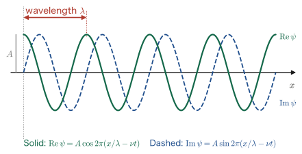
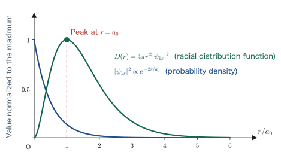
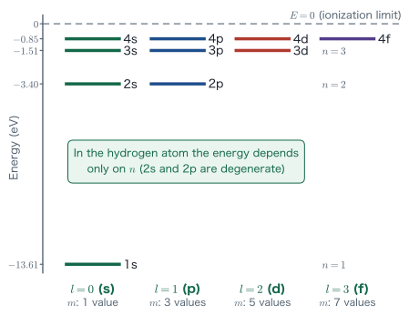
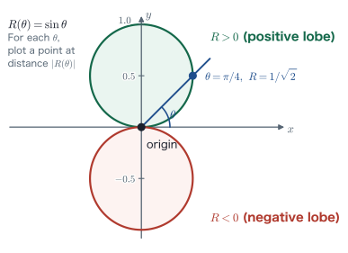
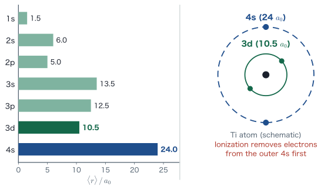
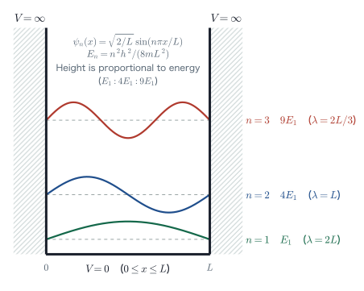

Chapter 2Review of Quantum Mechanics — From the Hydrogen Atom to the Periodic Table
In Chapter 1 we surveyed where computational science is used in materials research and what physical quantities it yields. Total energy, lattice constant, density of states, permittivity—all of them are quantities that come out of “what state the electrons are in.” How, then, is the state of an electron determined? The answer is the Schrödinger equation, and this chapter is devoted to reviewing it.
The starting point is high school chemistry. That electrons fill the K, L, and M shells in numbers of $2,\,8,\,18$, and that the energy levels of the hydrogen atom are given by $E_n=-13.6/n^2\ \mathrm{eV}$—you were probably made to memorize these as “just the way things are.” The aim of this chapter is to derive these two facts from the Schrödinger equation. The capacity $2n^2$ follows from counting the three quantum numbers $n,l,m$, and $-13.6/n^2$ comes out of the eigenvalues of the equation. We then organize the shapes of orbitals, the method of calculating expectation values of physical quantities, and the viewpoint that “the Schrödinger equation is an eigenvalue problem.”
This chapter is also the chapter that fixes the notation of the whole book. We declare how $e_0$, $\varepsilon_0$, $a_0$, and $\epsilon_{1s}$ are written in Section 2.1.3, and all later chapters follow it. The tools introduced here—wave functions, operators, expectation values, and eigenvalue equations—are used in every part of this book, from the variational principle in Chapter 3 to the electronic states of ionic crystals in Chapter 14.
- The route by which, starting from $E=h\nu$ (Planck, 1900), $p=h/\lambda$ (Einstein, 1905), and de Broglie's matter wave (1924), one assembles the Schrödinger equation $-\dfrac{h^2}{8\pi^2 m}\dfrac{\partial^2\psi}{\partial x^2}+V\psi=E\psi$ by algebraic manipulation alone, by way of the second derivative of a plane wave
- Born's probability interpretation $\rho=\abs{\psi}^2=\psi^*\psi$, the normalization condition, and the dimension of the wave function
- Writing the Schrödinger equation of the hydrogen atom in polar coordinates, and seeing that the restrictions on the quantum numbers, $l\le n-1$ and $\abs{m}\le l$, appear as a feature of the form of the equations from separation of variables and the series solution
- The derivation of the capacity of an electron shell, $2(1+3+5+\cdots+(2n-1))=2n^2$, and its correspondence with the periodic table (Ca, Sc, Ti)
- The explicit forms of the $1\mathrm{s}$ and $2\mathrm{p}_z$ wave functions, the shapes of s/p/d orbitals, and an intuitive understanding through the two-dimensional polar plot $R(\theta)=\sin\theta$
- The idea of the expectation value, starting from the expected value of a die roll, $\braket{x}=\int\psi^* x\psi\,\dd x$, and the momentum operator and the energy operator
- The expectation value of the orbital radius, $\braket{r}=n^2\left[1+\frac12\left(1-\frac{l(l+1)}{n^2}\right)\right]a_0$, and the reason why, when Ti is ionized, the electrons are removed from the 4s orbital first
- That the Schrödinger equation is an eigenvalue problem, $\Ham=\hat{p}^2/2m+V$, and a reinterpretation of the infinite potential well
2.1 Materials Are Made of Chemical Bonds — How the Electron Shells Fill
2.1.1 Chemical bonds are what hold materials together
Glass, semiconductors, resins (polymers), cement, multilayer ceramic capacitors, metals—the materials around us all look and behave very differently. Yet if we dig one level deeper and ask “what holds them together?”, the answer is common to all: the chemical bond that ties atoms to one another. Covalent bonds, ionic bonds, metallic bonds, and van der Waals bonds. The combination of these four kinds (plus hydrogen bonds) almost completely determines the hardness, melting point, electrical conductivity, and transparency of a material.
For example, glass (SiO$_2$-based) is a covalent Si–O network; a polymer consists of covalent bonds along the main chain and van der Waals forces between chains; a metal is held together by metallic bonding carried by free electrons; and the dielectrics of capacitors (BaTiO$_3$ and the like) are oxides with strong ionic character. In Chapter 13 we treat the van der Waals force and the Madelung energy, and in Chapter 14 the electronic states of ionic crystals, but every road leading there comes down to “what is a chemical bond?”
And as preparation for treating chemical bonds mathematically, we must first understand how the atom itself is put together. What states do the electrons in an atom take, what energies do they have, and how are they spread out in space? Only once we know that can we discuss what happens when two atoms are brought close together (the secular equation of Chapter 11, bonding orbitals and antibonding orbitals). This chapter lays that foundation.
Why? Why don't we start with chemical bonds right away?
As we will see in Chapter 11, the chemical bond between two atoms is described by “mixing the atomic orbitals $\phi_A$ and $\phi_B$ to form molecular orbitals.” If we discuss only how to mix without knowing what the ingredients $\phi_A,\phi_B$ are, the equations will work but we will not understand what they mean. Pinning down the shapes and energies of atomic orbitals first looks like a detour but is in fact the shortest path.
2.1.2 Review of high school chemistry: electron shells and the capacity $2n^2$
In high school chemistry we learn that around the atomic nucleus there are electron shells, and that electrons fill them in order from the inside, the K shell ($n=1$), the L shell ($n=2$), the M shell ($n=3$), the N shell ($n=4$), and so on. The capacity of electrons that each shell can hold is
The K shell holds $2\times1^2=2$ electrons, the L shell $2\times2^2=8$, the M shell $2\times3^2=18$, and the N shell $2\times4^2=32$. Readers who have studied more advanced material will also know that the energy levels of the electron in the hydrogen atom can be written as
$$ \begin{equation} E_n = -\frac{13.6}{n^2}\ \mathrm{eV} \qquad (n=1,2,3,\ldots) \label{eq:2-En-empirical} \end{equation} $$Here $n$ is, in the language of quantum mechanics, the quantity called the principal quantum number.
Math Note: The energy unit eV (electron volt)
$1\ \mathrm{eV}$ is the energy gained when a particle carrying the elementary charge $e_0$ is accelerated through a potential difference of $1\ \mathrm{V}$, and
$$1\ \mathrm{eV} = 1.602\times10^{-19}\ \mathrm{J}$$The energy per atom is of the order of $10^{-19}\ \mathrm{J}$, so the exponent is a nuisance if we keep using J. That is why we use eV. Converting to the “per mole” unit often used in chemistry, we multiply by the Avogadro constant $N_A=6.022\times10^{23}\ \mathrm{mol^{-1}}$ to get
$$1\ \mathrm{eV} = 1.602\times10^{-19}\times6.022\times10^{23}\ \mathrm{J/mol} = 96.5\ \mathrm{kJ/mol} = 23.1\ \mathrm{kcal/mol}$$(with $1\ \mathrm{cal}=4.184\ \mathrm{J}$). The bond energy of a typical covalent bond is $3$–$5\ \mathrm{eV}$, a hydrogen bond is about $0.2\ \mathrm{eV}$, and the thermal energy at room temperature, $k_BT$, is $0.026\ \mathrm{eV}$. We will use this sense of scale many times throughout this book, so it is worth memorizing.
But here is the catch. Why is the capacity $2n^2$? Why are the energy levels $-13.6/n^2$? In high school chemistry these are handed down without derivation, and no reason is given. In this chapter we derive both theoretically from quantum mechanics. To state the conclusion first, $2n^2$ comes in Section 2.5 from counting the sets of three quantum numbers $(n,l,m)$, and $-13.6/n^2$ comes in Section 2.4 as an eigenvalue of the Schrödinger equation. Even the number $13.6$ is determined solely by the mass of the electron, the elementary charge, the permittivity of vacuum, and the Planck constant.
2.1.3 Notation conventions of this book
Before getting to the main subject, let us fix the symbols used throughout this book. This book consistently uses SI units. Graduate-level textbooks and papers often use atomic units ($\hbar=m=e=4\pi\varepsilon_0=1$), but at the undergraduate stage SI units are easier to learn from, because they let us see which constant acts where.
Definition: Notation used in this book (common to all chapters from Chapter 2 on)
| Quantity | Symbol | Value / definition |
|---|---|---|
| Elementary charge | $e_0$ | $1.602\times10^{-19}\ \mathrm{C}$ |
| Permittivity of vacuum | $\varepsilon_0$ | $8.854\times10^{-12}\ \mathrm{F/m}$ |
| Electron mass | $m$ | $9.109\times10^{-31}\ \mathrm{kg}$ (the mass of a nucleus is $M$) |
| Planck constant | $h$, $\hbar=h/2\pi$ | $h=6.626\times10^{-34}\ \mathrm{J\,s}$ |
| Bohr radius | $a_0$ | $a_0=\dfrac{\varepsilon_0 h^2}{\pi m e_0^2}=0.529\times10^{-10}\ \mathrm{m}$ |
| Hydrogen 1s level | $\epsilon_{1s}$ | $\epsilon_{1s}=-\dfrac{m e_0^4}{8\varepsilon_0^2 h^2}=-13.606\ \mathrm{eV}$, $E_n=\epsilon_{1s}/n^2$ |
| Hamiltonian | $\Ham$ | Always put a hat on an operator ($\hat{p}$, $\hat{E}$, etc.) |
| One-electron wave function | $\phi$ | The many-electron wave function is $\psi$, and spin orbitals are $\chi$ |
| Spatial coordinate of an electron | $\bm{r}_i$ | Space plus spin coordinates are $\bm{x}_i$, and nuclear coordinates are $\bm{R}_I$ |
Care is needed with the notation for charge. The charge of the electron is $-e_0$ (with $e_0\gt0$), and $e_0$ itself is a positive quantity. Therefore the potential energy of an electron in the Coulomb potential created by a single proton is negative, $V=-\dfrac{1}{4\pi\varepsilon_0}\dfrac{e_0^2}{r}$.
Caution: Differences in notation from other books
Many textbooks write the elementary charge as $e$. This book writes it as $e_0$ to avoid confusion with the base of the natural logarithm $e$ and with the orbital energy $\varepsilon_i$ that appears in later chapters. Some authors also write the Bohr radius as $a_B$ (the lecture slides use this form), but this book standardizes on $a_0$, the form that is common internationally. Note that $\varepsilon_0$ (the permittivity of vacuum) and $\epsilon_{1s}$ (the hydrogen 1s level) are different quantities written in different typefaces.
2.2 From the Two Equations That Built Quantum Mechanics to the Schrödinger Equation
2.2.1 $E=h\nu$ and $p=h/\lambda$
The starting point of quantum mechanics is a pair of equations about light. Let $\nu$ (nu) be the frequency of light and $\lambda$ its wavelength. Then the energy $E$ and momentum $p$ of the light are written, using Planck's constant $h$, as
The former was found by Planck in 1900 and the latter by Einstein in 1905 (Einstein was awarded the 1921 Nobel Prize in Physics for his explanation of the photoelectric effect).
Planck was trying to explain the experimental data on black-body radiation. In classical electromagnetism, the calculated spectrum of the light emitted by a body at temperature $T$ diverges on the short-wavelength side (the ultraviolet catastrophe). However, when he assumed that “the energy of light is not continuous but is cut into units of $h\nu$,” the experimental spectrum was reproduced perfectly. When iron is heated it first glows red, and when heated further it turns whitish—this everyday phenomenon could be explained only by assuming that energy is discrete. A quantum is precisely this “unit of a quantity such as energy or momentum.”
The other equation, $p=h/\lambda$, follows easily when it is combined with Einstein's $E=mc^2$. Let $c$ be the speed of light, and suppose that light behaves “like a particle of mass $m$,” so that its momentum is written $p=mc$. Then
$$ \begin{equation} p = mc = \frac{mc^2}{c} = \frac{E}{c} = \frac{h\nu}{c} = \frac{h\nu}{\nu\lambda} = \frac{h}{\lambda}. \label{eq:2-p-mc} \end{equation} $$Along the way we used the fact that the speed of light is $c=\nu\lambda$ (wavelength × frequency). The two relations in Eq. \eqref{eq:2-planck-einstein} are the ingredients for deriving the Schrödinger equation.
Caution: A photon has no rest mass
The $m$ in $p=mc$ in Eq. \eqref{eq:2-p-mc} is the so-called relativistic mass $E/c^2$, not the rest mass of the photon. The rest mass of a photon is zero. Putting $m_0=0$ into the correct relativistic relation $E^2=(pc)^2+(m_0c^2)^2$ immediately gives $E=pc$, that is, $p=E/c=h/\lambda$. Please regard Eq. \eqref{eq:2-p-mc} as a handy device for remembering the result.
2.2.2 de Broglie: matter is also a wave
In 1924, L. de Broglie made a bold reversal of thinking. If light (a wave) has particle character, might not the electron (a particle) have wave character as well? That is, might not a particle with momentum $p$ be accompanied by a wavelength
$$ \begin{equation} \lambda = \frac{h}{p} \label{eq:2-debroglie} \end{equation} $$? This wave is called a matter wave or a de Broglie wave. In 1927, Davisson and Germer observed electron diffraction by a nickel single crystal, and this prediction was confirmed experimentally. Today's transmission electron microscopy (TEM) and low-energy electron diffraction (LEED) are instruments that make use of precisely this wave nature of the electron.
Example 2.1: de Broglie wavelength of an accelerated electron
An electron initially at rest is accelerated through a potential difference $V=100\ \mathrm{V}$. Find the de Broglie wavelength of this electron.
Solution. The kinetic energy gained by an electron accelerated through a potential difference $V$ is $e_0V$. Setting $\dfrac{p^2}{2m}=e_0V$ nonrelativistically, we have
$$p = \sqrt{2me_0V} = \sqrt{2\times(9.109\times10^{-31})\times(1.602\times10^{-19})\times100}$$First we evaluate the quantity under the square root. We have $2\times9.109\times1.602\times100 = 2918.5$, and the powers of ten give $10^{-31}\times10^{-19}=10^{-50}$, so the quantity under the root is $2918.5\times10^{-50}=2.9185\times10^{-47}$. Therefore
$$p = \sqrt{2.9185\times10^{-47}} = 5.402\times10^{-24}\ \mathrm{kg\,m/s}.$$Substituting this into Eq. \eqref{eq:2-debroglie} gives
$$\lambda = \frac{h}{p} = \frac{6.626\times10^{-34}}{5.402\times10^{-24}} = 1.227\times10^{-10}\ \mathrm{m} = 1.23\ \text{Å}.$$This is comparable to interatomic distances ($1$–$3\ \text{Å}$). That is exactly why an electron beam is diffracted by crystals and can be used for structure analysis. Incidentally, for an object of mass $1\ \mathrm{g}$ and speed $1\ \mathrm{m/s}$, $\lambda=h/p=6.6\times10^{-31}\ \mathrm{m}$, which is too small to be observed. Wave nature becomes manifest only in the microscopic world.
2.2.3 The plane wave and its second derivative
If the electron is a wave, we must prepare a function that represents this “wavelike state.” This is called the wave function and is denoted by $\psi$. The simplest wave is the plane wave with wavelength $\lambda$ and frequency $\nu$ traveling in the $x$ direction. Written in complex form, it is
In the second equality we used Euler's formula $e^{i\theta}=\cos\theta+i\sin\theta$. Here $A$ is the amplitude (in general a complex number).

Let us differentiate this wave function with respect to $x$. The derivative of an exponential function can be computed with the derivative of a composite function (the chain rule). Differentiating the exponent of $e^{i2\pi(x/\lambda-\nu t)}$ with respect to $x$ gives $i2\pi/\lambda$, so
$$ \frac{\partial\psi}{\partial x} = A\cdot i\frac{2\pi}{\lambda}\,e^{i2\pi\left(\frac{x}{\lambda}-\nu t\right)} = i\frac{2\pi}{\lambda}\,\psi . $$If we differentiate with respect to $x$ once more, the same coefficient appears once more:
$$ \begin{equation} \frac{\partial^2\psi}{\partial x^2} = \left(i\frac{2\pi}{\lambda}\right)^{\!2}\psi = i^2\frac{4\pi^2}{\lambda^2}\psi = -\frac{4\pi^2}{\lambda^2}\,\psi . \label{eq:2-second-deriv} \end{equation} $$We used $i^2=-1$. Equation \eqref{eq:2-second-deriv} means that “when a plane wave is differentiated twice, we get back the original function multiplied by $-4\pi^2/\lambda^2$.” The wavelength $\lambda$ has appeared inside the operation of second differentiation—this is the decisive step.
2.2.4 Building up the Schrödinger equation
Meanwhile, mechanics also gives us information about $\lambda$. Suppose an electron of mass $m$ moves in a region where the potential energy is $V$. The total energy $E$ is the sum of the kinetic energy and the potential energy, so
$$ E = \frac{p^2}{2m} + V \quad\Longleftrightarrow\quad p^2 = 2m(E-V) \quad\Longleftrightarrow\quad p = \sqrt{2m(E-V)} . $$Substituting the de Broglie relation \eqref{eq:2-debroglie}, that is, $p=h/\lambda$, here gives
$$ \frac{h}{\lambda} = \sqrt{2m(E-V)} \quad\Longleftrightarrow\quad \lambda = \frac{h}{\sqrt{2m(E-V)}} \quad\Longleftrightarrow\quad \frac{1}{\lambda^2} = \frac{2m(E-V)}{h^2} . $$We substitute the last expression into \eqref{eq:2-second-deriv}. Then
$$ \frac{\partial^2\psi}{\partial x^2} = -4\pi^2\cdot\frac{2m(E-V)}{h^2}\,\psi = -\frac{8\pi^2 m}{h^2}(E-V)\,\psi . $$Multiplying both sides by $-\dfrac{h^2}{8\pi^2 m}$, the coefficient on the right-hand side cancels neatly, and we obtain
$$ -\frac{h^2}{8\pi^2 m}\frac{\partial^2\psi}{\partial x^2} = -\frac{h^2}{8\pi^2 m}\cdot\left(-\frac{8\pi^2 m}{h^2}\right)(E-V)\,\psi = (E-V)\,\psi = E\psi - V\psi . $$Moving $V\psi$ to the left-hand side, the desired equation appears.
This is the one-dimensional Schrödinger equation. E. Schrödinger put forward this equation in 1926 and received the Nobel Prize in Physics in 1933. Here
$$ \begin{equation} \Ham \equiv -\frac{h^2}{8\pi^2 m}\frac{\partial^2}{\partial x^2} + V \label{eq:2-hamiltonian} \end{equation} $$is called the Hamiltonian. The Hamiltonian is an operator that takes in a function and returns another function, and to make clear that it is an operator we attach a hat $\hat{\phantom{x}}$. To solve Eq. \eqref{eq:2-schrodinger-1d} is nothing other than to find $E$ and $\psi$ simultaneously for a given $V$. Once $E$ and $\psi$ are found, every physical quantity we saw in Chapter 1 can be calculated.
Math Note: Rewriting $h$ and $\hbar$
Using $\hbar\equiv h/2\pi$ (h-bar, the reduced Planck constant), we have $h^2=4\pi^2\hbar^2$, so
$$\frac{h^2}{8\pi^2 m} = \frac{4\pi^2\hbar^2}{8\pi^2 m} = \frac{\hbar^2}{2m}$$and the Schrödinger equation can also be written as $-\dfrac{\hbar^2}{2m}\dfrac{\partial^2\psi}{\partial x^2}+V\psi=E\psi$. Many textbooks use this form. In this book we take the form with $h$ as the basic one, to match the lecture, but the two are exactly the same thing. If you start to feel confused, substitute $h=2\pi\hbar$ and check.
Caution: This is a “motivation,” not a “derivation”
The argument above is not a proof of the Schrödinger equation. On close inspection, in the step where we substitute $\lambda=h/\sqrt{2m(E-V)}$ into Eq. \eqref{eq:2-second-deriv}, we implicitly use the fact that $V$ (and hence $\lambda$) is constant, independent of $x$. In the general case where $V$ depends on $x$, this substitution is not rigorously justified.
In reality, the Schrödinger equation is an axiom (a fundamental postulate) and is not derived from more fundamental laws. This is the same as the fact that Newton's equation of motion $F=ma$ cannot be proved. The manipulation above is a path for convincing ourselves of “why it has this form,” and the honest way to put it is that the correctness of the equation is supported by all of a hundred years' worth of experiments.
2.3 The Meaning of the Wave Function — Born's Probability Interpretation
2.3.1 $\abs{\psi}^2$ is the probability density
If we solve the Schrödinger equation, we obtain $\psi$. But what is $\psi$? In fact, it is said that even Schrödinger himself did not at first know what the wave function represents. It was M. Born who answered this question, proposing the following interpretation (1926; Nobel Prize in Physics, 1954):
Principle: Born's probability interpretation
The squared absolute value of the wave function, $\abs{\psi(\bm{r},t)}^2$, is the probability density of finding the particle at position $\bm{r}$ at time $t$. That is, the probability of finding the particle in an infinitesimal volume $\dd^3 r$ is equal to $\abs{\psi(\bm{r},t)}^2\dd^3 r$.
If we write the probability density as $\rho$, then
holds. Here $\psi^*$ denotes the complex conjugate of $\psi$. The wave function is in general a complex number, so as it stands it is not a real quantity such as a “probability.” Only by taking the squared absolute value do we obtain a quantity that is real and nonnegative, and this is the reason for adopting $\abs{\psi}^2$.
Math Note: Complex conjugates and the squared absolute value
For a complex number $z=a+bi$ ($a,b$ real numbers), the complex conjugate is $z^*=a-bi$, that is, the original number with the sign of its imaginary part reversed. Then
$$z^*z = (a-bi)(a+bi) = a^2 - (bi)^2 = a^2+b^2 = \abs{z}^2 \ \ (\ge 0)$$so the result is always real and nonnegative. In exponential form, $\left(e^{i\theta}\right)^* = e^{-i\theta}$ ($\theta$ real), and $\left(e^{i\theta}\right)^*e^{i\theta}=e^{-i\theta}e^{i\theta}=e^0=1$. That is, the squared absolute value of a complex number of absolute value 1 is 1. We use this fact next.
Let us check this with the plane wave in Eq. \eqref{eq:2-plane-wave}. The complex conjugate of $\psi=Ae^{i2\pi(x/\lambda-\nu t)}$ is obtained by conjugating $A$ and reversing the sign of the exponent:
$$ \psi^* = A^*e^{-i2\pi\left(\frac{x}{\lambda}-\nu t\right)} . $$Therefore the probability density is
$$ \rho = \psi^*\psi = A^*e^{-i2\pi\left(\frac{x}{\lambda}-\nu t\right)}\cdot A e^{i2\pi\left(\frac{x}{\lambda}-\nu t\right)} = \abs{A}^2 e^{0} = \abs{A}^2 $$which is a constant independent of both $x$ and $t$. In other words, an electron in a plane wave exists with equal probability everywhere in space. This is the most extreme example of the uncertainty principle, which says that “a particle whose momentum (wavelength) is completely determined has a completely indefinite position.”
2.3.2 The normalization condition
If $\rho$ is a probability density, then its integral over all space must give “the probability that the particle is certainly somewhere = 1.” In one dimension,
holds. This is called the normalization condition, and the operation of determining the amplitude $A$ so that this condition is satisfied is called normalizing. For a one-electron system, the value of the integral can also be read as equal to the number of electrons, 1.
Why? What are the dimensions (units) of the wave function?
On the left-hand side of Eq. \eqref{eq:2-normalize}, if $\abs{\psi}^2\dd x$ is a dimensionless probability, then $\abs{\psi}^2$ must have dimension $[\mathrm{m}^{-1}]$, that is, $\psi$ must have dimension $[\mathrm{m}^{-1/2}]$. In three dimensions, $\abs{\psi}^2$ has dimension $[\mathrm{m}^{-3}]$, so $\psi$ has dimension $[\mathrm{m}^{-3/2}]$. Indeed, $\psi_{1s}=\frac{1}{\sqrt{\pi}}a_0^{-3/2}e^{-r/a_0}$, which appears in Section 2.6, has the factor $a_0^{-3/2}$ of dimension $[\mathrm{m}^{-3/2}]$.
The wave function itself is not a quantity that can be measured directly in experiments, but $\abs{\psi}^2$ is a measurable quantity (the electron density). What X-ray diffraction determines is the electron density $\rho$, not $\psi$. This fact foreshadows the discussion from Chapter 9 onward, in which density takes the leading role.
Example 2.2: Normalization constant of a 1s-type wave function
In three-dimensional space, let $\psi(\bm{r}) = A\,e^{-r/a_0}$ ($r=\abs{\bm{r}}$, $a_0$ a constant). Find the real number $A\gt0$ that satisfies the normalization condition.
Solution. The three-dimensional integral of a spherically symmetric function can be written, using the volume element in polar coordinates, $\dd^3r = r^2\sin\theta\,\dd r\,\dd\theta\,\dd\varphi$, as
$$\int\psi^*\psi\,\dd^3r = A^2\int_0^{2\pi}\!\!\dd\varphi\int_0^{\pi}\!\!\sin\theta\,\dd\theta\int_0^{\infty} e^{-2r/a_0}\,r^2\,\dd r$$This can be decomposed into a product of three integrals. The angular part is
$$\int_0^{2\pi}\dd\varphi = 2\pi, \qquad \int_0^{\pi}\sin\theta\,\dd\theta = \Bigl[-\cos\theta\Bigr]_0^{\pi} = -(-1)-(-1) = 2$$so together they give $4\pi$ (the total solid angle). For the radial part we use the following formula (see Appendix A):
$$\int_0^{\infty} r^{n}e^{-\alpha r}\,\dd r = \frac{n!}{\alpha^{n+1}}\qquad(\alpha\gt0,\ n=0,1,2,\ldots).$$Here $n=2$ and $\alpha=2/a_0$, so
$$\int_0^{\infty} r^2 e^{-2r/a_0}\dd r = \frac{2!}{(2/a_0)^3} = \frac{2}{8/a_0^3} = \frac{a_0^3}{4}.$$Therefore
$$\int\psi^*\psi\,\dd^3r = A^2\cdot 4\pi\cdot\frac{a_0^3}{4} = A^2\pi a_0^3 = 1 \quad\Longrightarrow\quad A = \frac{1}{\sqrt{\pi a_0^3}} = \frac{1}{\sqrt{\pi}}\left(\frac{1}{a_0}\right)^{3/2}.$$This is exactly the normalization constant of the hydrogen-atom 1s wave function that appears in Section 2.6.
2.3.3 Probability density and the radial distribution function
When dealing with a spherically symmetric wave function in three dimensions, we must distinguish $\abs{\psi(r)}^2$ itself from “the probability of finding the electron in a thin spherical shell at distance $r$ from the nucleus.” The latter is obtained by multiplying by the volume $4\pi r^2\,\dd r$ of a spherical shell of radius $r$ and thickness $\dd r$, and can be written as
$$ \begin{equation} D(r)\,\dd r = 4\pi r^2\abs{\psi(r)}^2\,\dd r \label{eq:2-radial-dist} \end{equation} $$We call $D(r)$ the radial distribution function. $\abs{\psi}^2$ is largest at the position of the nucleus, $r=0$, but $D(r)$ is zero at $r=0$ and has a peak at some intermediate distance. This is because the volume near $r=0$ is too small for the electron to be easily found there. For the 1s orbital, differentiating $D(r)\propto r^2e^{-2r/a_0}$ and setting the result equal to zero gives
$$ \frac{\dd}{\dd r}\left(r^2 e^{-2r/a_0}\right) = 2r\,e^{-2r/a_0} + r^2\left(-\frac{2}{a_0}\right)e^{-2r/a_0} = 2r\,e^{-2r/a_0}\left(1-\frac{r}{a_0}\right) = 0 $$so the peak is at $r=a_0$. The Bohr radius $a_0$ is the distance at which the 1s electron of the hydrogen atom is most likely to be found. In Bohr's classical model of the atom, $a_0$ was “the orbital radius of the electron,” but in quantum mechanics it is reinterpreted in this probabilistic sense.

2.4 The Schrödinger Equation for the Hydrogen Atom
2.4.1 Extension to three dimensions and the Coulomb potential
We now turn to the hydrogen atom. To extend Eq. \eqref{eq:2-schrodinger-1d} to three dimensions, we need only replace the second derivative with respect to $x$ by the sum of the second derivatives in all three directions $x,y,z$:
$$ \begin{equation} -\frac{h^2}{8\pi^2 m}\left(\frac{\partial^2}{\partial x^2}+\frac{\partial^2}{\partial y^2}+\frac{\partial^2}{\partial z^2}\right)\psi + V\psi = E\psi . \label{eq:2-schrodinger-3d} \end{equation} $$The expression in parentheses is an operator called the Laplacian $\nabla^2$.
For the hydrogen atom, we fix the nucleus (one proton, charge $+e_0$) at the origin $(x,y,z)=(0,0,0)$ and let $\psi$ be the wave function of the electron (charge $-e_0$) around it. From Coulomb's law, the potential energy that the electron feels from the proton is
Since the two charges have opposite signs, $V\lt0$; that is, the force is attractive. We have $V\to0$ as $r\to\infty$ and $V\to-\infty$ as $r\to0$.
Math Note: Is it all right to hold the nucleus fixed?
Here we fixed the nucleus at the origin. In reality the proton also moves, but the proton is about 1836 times heavier than the electron, so the center of mass lies almost exactly at the position of the proton. Strictly speaking, one need only replace the electron mass $m$ by the reduced mass $\mu = mM/(m+M) \approx 0.99946\,m$, and the effect on the energy is only about $0.05\%$. This idea of “regarding the heavy nucleus as being at rest” reappears in earnest in Chapter 8 as the Born–Oppenheimer approximation.
2.4.2 Moving to polar coordinates
The potential \eqref{eq:2-coulomb} is a function of $r$ alone; that is, it is spherically symmetric. Solving a spherically symmetric problem in Cartesian coordinates $(x,y,z)$ is a poor strategy. As you learned in calculus, it is far easier to move to the polar coordinate system (also called spherical coordinates) $(r,\theta,\varphi)$. Here $\theta$ is the polar angle measured from the $z$ axis ($0\le\theta\le\pi$), and $\varphi$ is the azimuthal angle measured from the $x$ axis in the $xy$ plane ($0\le\varphi\lt2\pi$).
Caution: The roles of $\theta$ and $\varphi$ are interchanged from book to book
Physics textbooks often take $\theta$ to be the polar angle and $\varphi$ the azimuthal angle, as in this book, but mathematics textbooks sometimes do the opposite. When you compare equations with those in other books, first check “which one is the angle from the $z$ axis.” Throughout all chapters, this book consistently uses $\theta$ = polar angle and $\varphi$ = azimuthal angle.
By the change-of-variables calculation (see Appendix A), the Laplacian in polar coordinates can be written as
$$ \begin{equation} \frac{\partial^2}{\partial x^2}+\frac{\partial^2}{\partial y^2}+\frac{\partial^2}{\partial z^2} = \frac{1}{r^2}\frac{\partial}{\partial r}\left(r^2\frac{\partial}{\partial r}\right) + \frac{1}{r^2\sin\theta}\frac{\partial}{\partial\theta}\left(\sin\theta\frac{\partial}{\partial\theta}\right) + \frac{1}{r^2\sin^2\theta}\frac{\partial^2}{\partial\varphi^2} \label{eq:2-laplacian-polar} \end{equation} $$Although it looks complicated, note its structure: the first term contains only $r$, and the second and third terms contain only angles. It is precisely this structure that makes the next step, separation of variables, possible.
2.4.3 Separation of variables
We assume that the wave function has the form of a product of a function of $r$ alone, a function of $\theta$ alone, and a function of $\varphi$ alone:
$$ \begin{equation} \psi(r,\theta,\varphi) = R(r)\,\Theta(\theta)\,\Phi(\varphi) \label{eq:2-separation} \end{equation} $$This is called separation of variables. Substituting Eq. \eqref{eq:2-separation} into Eq. \eqref{eq:2-schrodinger-3d} by way of \eqref{eq:2-laplacian-polar}, multiplying both sides by $-\dfrac{8\pi^2m r^2\sin^2\theta}{h^2 R\Theta\Phi}$, and rearranging, we find that the term containing $\varphi$ separates in the form
$$ \frac{1}{\Phi}\frac{\dd^2\Phi}{\dd\varphi^2} = -m_\ell^2 \quad(\text{constant}) $$(the other terms are functions of $r,\theta$ only, so for the two sides to be equal, each must be a constant). We have written this separation constant as $-m_\ell^2$. The solution is
$$ \Phi(\varphi) = \frac{1}{\sqrt{2\pi}}\,e^{i m_\ell \varphi} $$Now a physical requirement comes into play. Since $\varphi$ and $\varphi+2\pi$ refer to the same point in space, we must have $\Phi(\varphi+2\pi)=\Phi(\varphi)$. That is, $e^{i m_\ell 2\pi}=1$, and therefore
$$ m_\ell = 0,\ \pm1,\ \pm2,\ \ldots \quad(\text{integer}) $$The reason the quantum number is an integer comes from the condition of “single-valuedness” imposed on the solution of the differential equation—this is the true nature of quantization. Below, unless there is a risk of confusion, we simply write $m_\ell$ as $m$ (it looks the same as the electron mass $m$, but the two can be distinguished by context).
Separating the $\theta$ part in the same way, an equation for $\Theta(\theta)$ appears (the associated Legendre differential equation), and the condition that the solution not diverge requires a new integer $l$ ($l\ge\abs{m}$). The remaining $r$ part is the radial equation, and substituting the Coulomb potential \eqref{eq:2-coulomb} and solving it yields the quantization of the energy $E$.
2.4.4 Result of the series solution
To actually solve the radial and angular equations, we use the Frobenius method (series solution), in which the solution is expressed as a power series such as $\sum_k c_k r^k$ and a recurrence relation for the coefficients is obtained. The calculation is long, so this book gives only the result, but the aim of this section is to read off how the restrictions on the quantum numbers are built into the resulting expressions.
Theorem: The solution of the Schrödinger equation for the hydrogen atom
The radial part $R(r)$ is given, in terms of the principal quantum number $n$ and the azimuthal quantum number $l$, by
$$ \begin{equation} R_{nl}(r)=\sqrt{\frac{\pi m e_0^2}{\varepsilon_0 h^2}\frac{(n-l-1)!}{n^2\{(n+l)!\}^3}}\; \frac{e^{-\frac{\pi m e_0^2}{\varepsilon_0 h^2}\frac{r}{n}}}{r} \sum_{k=2l+1}^{n+l} \frac{(-1)^k\{(n+l)!\}^2}{(k-2l-1)!\,k!\,(n+l-k)!} \left(-\frac{2\pi m e_0^2}{\varepsilon_0 h^2}\frac{r}{n}\right)^{k-l} \label{eq:2-radial-general} \end{equation} $$The angular part (the spherical harmonics) is, in terms of the azimuthal quantum number $l$ and the magnetic quantum number $m$,
$$ \begin{equation} Y_{lm}(\theta,\varphi)=\Theta(\theta)\Phi(\varphi) =(-1)^{\frac{m+\abs{m}}{2}} \sqrt{\frac{2l+1}{4\pi}\frac{(l-\abs{m})!}{(l+\abs{m})!}}\; \left(1-\cos^2\theta\right)^{\frac{\abs{m}}{2}} \frac{1}{2^l l!} \left\{\frac{\dd^{\,l+\abs{m}}}{\dd(\cos\theta)^{l+\abs{m}}}\left(\cos^2\theta-1\right)^{l}\right\} e^{im\varphi} \label{eq:2-spherical-harm} \end{equation} $$and the energy eigenvalue is
$$ \begin{equation} E_n = -\frac{m e_0^4}{8\varepsilon_0^2 h^2}\frac{1}{n^2} = \frac{\epsilon_{1s}}{n^2} \label{eq:2-energy-n} \end{equation} $$The complete wave function is $\psi_{nlm}(r,\theta,\varphi)=R_{nl}(r)\,Y_{lm}(\theta,\varphi)$.
These complicated expressions may give you a headache, so let us look only at the essential points.
2.4.5 The restrictions on the quantum numbers can be read off from the form of the equation
First, look at the sum in Eq. \eqref{eq:2-radial-general}. The sum runs from $k=2l+1$ to $k=n+l$. For the sum not to be empty (that is, for a solution to exist), the lower limit must not exceed the upper limit. Therefore
$$ 2l+1 \le n+l \quad\Longleftrightarrow\quad l \le n-1 . $$The same can be read off from the factorial $(k-2l-1)!$ in the denominator. A factorial is not defined for negative integers (we regard $1/(\text{negative integer})!=0$), so we need $k-2l-1\ge0$, that is, $k\ge2l+1$.
Next, look inside the square root in Eq. \eqref{eq:2-spherical-harm}. Since $(l-\abs{m})!$ appears there, we similarly need
$$ l-\abs{m}\ge0 \quad\Longleftrightarrow\quad \abs{m}\le l \quad\Longleftrightarrow\quad -l\le m\le l . $$To summarize, we have the following.
Definition: The three quantum numbers and their restrictions
- Principal quantum number $n=1,2,3,\ldots$—determines the energy. Corresponds to the K, L, M, … shells.
- Azimuthal quantum number $l=0,1,2,\ldots,n-1$—determines the magnitude of the orbital angular momentum. The values $l=0,1,2,3$ are called s, p, d, f orbitals, respectively.
- Magnetic quantum number $m=-l,-l+1,\ldots,0,\ldots,l-1,l$ ($2l+1$ values in all)—determines the $z$ component of the orbital angular momentum.
That is, $l\le n-1$ and $\abs{m}\le l$. These two inequalities determine the shape of the periodic table.
Physical Meaning: Why are there restrictions?
In terms of the formulas, it may look like a merely technical reason, “so that the factorials can be defined,” but physics lies behind it. The quantity $l$ represents the magnitude of the electron's orbital angular momentum ($\abs{\bm{L}}=\sqrt{l(l+1)}\,\hbar$). The larger the angular momentum, the more the centrifugal force pushes the electron outward, and the total energy needed to remain bound to the nucleus runs short. Therefore, for a given energy (given $n$), there is an upper bound on the allowed angular momentum. That bound is $l\le n-1$. Similarly, since $m$ is the $z$ component of the angular momentum, the obvious requirement that a component of a vector cannot exceed its magnitude corresponds to $\abs{m}\le l$.
2.4.6 Checking $a_0$ and $\epsilon_{1s}$
The quantity $\dfrac{\pi m e_0^2}{\varepsilon_0 h^2}$ that appears in the exponent of the exponential function in Eq. \eqref{eq:2-radial-general} has the dimension of an inverse length. Its reciprocal is the Bohr radius:
Using this, the exponent in Eq. \eqref{eq:2-radial-general} becomes simply $e^{-r/(na_0)}$. Similarly, we define the coefficient of the energy \eqref{eq:2-energy-n} as
These two are the most important constants used throughout this book. Let us check them by substituting numerical values.
Example 2.3: Numerical evaluation of $a_0$ and $\epsilon_{1s}$
Using $\varepsilon_0=8.854\times10^{-12}\ \mathrm{F/m}$, $h=6.626\times10^{-34}\ \mathrm{J\,s}$, $m=9.109\times10^{-31}\ \mathrm{kg}$, and $e_0=1.602\times10^{-19}\ \mathrm{C}$, calculate $a_0$ and $\epsilon_{1s}$.
Solution. First we calculate the Bohr radius \eqref{eq:2-bohr-radius}. The numerator is
$$\varepsilon_0 h^2 = (8.854\times10^{-12})\times(6.626\times10^{-34})^2 = 8.854\times10^{-12}\times4.390\times10^{-67} = 3.887\times10^{-78},$$and the denominator is
$$\pi m e_0^2 = 3.1416\times(9.109\times10^{-31})\times(1.602\times10^{-19})^2 = 3.1416\times9.109\times10^{-31}\times2.566\times10^{-38} = 7.343\times10^{-68}.$$Therefore
$$a_0 = \frac{3.887\times10^{-78}}{7.343\times10^{-68}} = 5.293\times10^{-11}\ \mathrm{m} = 0.529\times10^{-10}\ \mathrm{m} = 0.529\ \text{Å} .$$Next we obtain $\epsilon_{1s}$ from Eq. \eqref{eq:2-eps1s}. The numerator is
$$m e_0^4 = 9.109\times10^{-31}\times(1.602\times10^{-19})^4 = 9.109\times10^{-31}\times6.586\times10^{-76} = 6.000\times10^{-106},$$and the denominator is
$$8\varepsilon_0^2h^2 = 8\times(8.854\times10^{-12})^2\times(6.626\times10^{-34})^2 = 8\times7.839\times10^{-23}\times4.390\times10^{-67} = 2.754\times10^{-88}.$$Thus
$$\epsilon_{1s} = -\frac{6.000\times10^{-106}}{2.754\times10^{-88}} = -2.179\times10^{-18}\ \mathrm{J} = -21.8\times10^{-19}\ \mathrm{J}.$$To convert to eV, we divide by $1\ \mathrm{eV}=1.602\times10^{-19}\ \mathrm{J}$:
$$\epsilon_{1s} = \frac{-2.179\times10^{-18}}{1.602\times10^{-19}} = -13.60\ \mathrm{eV}.$$(Using the more precise CODATA values gives $a_0=0.52918\ \text{Å}$ and $\epsilon_{1s}=-13.606\ \mathrm{eV}$.) The “$13.6$” in $E_n=-13.6/n^2\ \mathrm{eV}$, which you were made to memorize in high school chemistry, was determined entirely by just four fundamental constants: the electron mass, the elementary charge, the permittivity of vacuum, and the Planck constant. Note that not a single experimental value was used.
Derivation: Extracting $R_{1s}$ from the general expression \eqref{eq:2-radial-general}
Let us check that the general expression is really correct in the simplest case, $n=1,\ l=0$. Using $a_0=\varepsilon_0h^2/(\pi m e_0^2)$, we have $\pi m e_0^2/(\varepsilon_0h^2)=1/a_0$.
(i) The square-root factor: Since $n=1,l=0$, we have $(n-l-1)!=0!=1$, $n^2=1$, and $\{(n+l)!\}^3=(1!)^3=1$. Hence $\sqrt{(1/a_0)\times1/1}=a_0^{-1/2}$.
(ii) The exponential factor: $e^{-r/(1\cdot a_0)}/r = e^{-r/a_0}/r$.
(iii) The sum: $k$ runs from $2l+1=1$ to $n+l=1$, that is, only $k=1$. That term is
$$\frac{(-1)^1\{1!\}^2}{(1-0-1)!\;1!\;(1+0-1)!}\left(-\frac{2r}{a_0}\right)^{1-0} =\frac{-1}{0!\cdot1!\cdot0!}\times\left(-\frac{2r}{a_0}\right) =(-1)\times\left(-\frac{2r}{a_0}\right)=\frac{2r}{a_0}.$$(iv) Multiplying them together:
$$R_{10}(r)=a_0^{-1/2}\cdot\frac{e^{-r/a_0}}{r}\cdot\frac{2r}{a_0} =2\,a_0^{-3/2}e^{-r/a_0}.$$The $1/r$ and $r$ cancel, and we obtain the well-known radial function of the 1s orbital. We can also confirm the normalization: $\int_0^\infty R_{10}^2 r^2\dd r = 4a_0^{-3}\int_0^\infty r^2e^{-2r/a_0}\dd r = 4a_0^{-3}\cdot\frac{a_0^3}{4}=1$ (using the integral from Example 2.2). The general expression is indeed correct.

2.5 The Three Quantum Numbers and the Electron Capacity $2n^2$
2.5.1 Counting by cases
Let us count, one by one, how many pairs $(l,m)$ there are for each principal quantum number $n$ under the restrictions $l\le n-1$, $\abs{m}\le l$.
(1) The case $n=1$. From $l\le n-1=0$ and $l\ge0$, only $l=0$ is allowed. From $-l\le m\le l$, only $m=0$ is allowed. Hence there is one state, $(l,m)=(0,0)$. This is the 1s orbital.
(2) The case $n=2$. From $l\le1$, $l=0,1$.
- $l=0$: one state, $m=0$ (the 2s orbital)
- $l=1$: three states, $m=-1,0,+1$ (the 2p orbitals)
The total is $1+3=\mathbf{4}$.
(3) The case $n=3$. From $l\le2$, $l=0,1,2$.
- $l=0$: one state, $m=0$ (the 3s orbital)
- $l=1$: three states, $m=0,\pm1$ (the 3p orbitals)
- $l=2$: five states, $m=0,\pm1,\pm2$ (the 3d orbitals)
The total is $1+3+5=\mathbf{9}$.
| $n$ | Electron shell | $l=0$ (s) | $l=1$ (p) | $l=2$ (d) | $l=3$ (f) | Total number of states | Electron capacity $2n^2$ |
|---|---|---|---|---|---|---|---|
| 1 | K | 1 | — | — | — | 1 | 2 |
| 2 | L | 1 | 3 | — | — | 4 | 8 |
| 3 | M | 1 | 3 | 5 | — | 9 | 18 |
| 4 | N | 1 | 3 | 5 | 7 | 16 | 32 |
2.5.2 Derivation of $2n^2$
Here we need one more rule. By the Pauli exclusion principle, a single state $(n,l,m)$ can hold at most two electrons. Two can enter because the electron has an internal degree of freedom called spin, which distinguishes two possibilities, up ($\alpha$) and down ($\beta$). A full treatment of spin and the exclusion principle is deferred to Chapter 7 (the Slater determinant).
Therefore the number of electrons in the shell with principal quantum number $n$ is twice the number of states:
- $n=1$ (K shell): $2\times1=2$ electrons
- $n=2$ (L shell): $2(1+3)=8$ electrons
- $n=3$ (M shell): $2(1+3+5)=18$ electrons
- $n=4$ (N shell): $2(1+3+5+7)=32$ electrons
In general, it suffices to add up the number of states $2l+1$ for $l=0,1,\ldots,n-1$. Listing $2l+1$ in order from $l=0$ gives $1,3,5,\ldots,2n-1$, an arithmetic sequence with first term 1 and common difference 2 (the sequence of odd numbers). The number of terms is $n$. Using the formula for the sum of an arithmetic sequence, “$\dfrac{\text{number of terms}}{2}\times(\text{first term}+\text{last term})$,” we have
$$ \sum_{k=1}^{n}(2k-1) = \frac{n}{2}\Bigl(1+(2n-1)\Bigr) = \frac{n}{2}\cdot2n = n^2 . $$Multiplying by 2 for spin, we obtain
Eq. \eqref{eq:2-capacity}, the formula we memorized in high school chemistry, has thus emerged solely from the restrictions on the quantum numbers that accompany the solutions of the Schrödinger equation. The answer to “Why $2n^2$?” consists of three ingredients: $l\le n-1$, $\abs{m}\le l$, and the Pauli exclusion principle.
Example 2.4: The number of states for $n=4$
For $n=4$ (the N shell), write out all the pairs $(l,m)$ and verify that the electron capacity is 32.
Solution. Since $l\le n-1=3$, we have $l=0,1,2,3$.
- $l=0$ (4s): $m=0$ ⇒ one state
- $l=1$ (4p): $m=-1,0,+1$ ⇒ three states
- $l=2$ (4d): $m=-2,-1,0,+1,+2$ ⇒ five states
- $l=3$ (4f): $m=-3,-2,-1,0,+1,+2,+3$ ⇒ seven states
The total is $1+3+5+7=16$ states. Checking with the sum of an arithmetic sequence, $\frac{4}{2}(1+7)=2\times8=16=4^2$, which is indeed $n^2$. Because of spin, each state holds two electrons, so there are $2\times16=32=2\times4^2$ electrons. This is the capacity of the N shell.
2.5.3 Correspondence with the periodic table — the inversion of 4s and 3d
It should now be clear that each period of the periodic table corresponds to $n$ and each block (the s-block, p-block, d-block, and f-block) corresponds to $l$. That the s-block has two columns ($2\times1$), the p-block six ($2\times3$), the d-block ten ($2\times5$), and the f-block fourteen ($2\times7$) is nothing but $2(2l+1)$ itself.
However, the electron configurations of actual elements deviate from the hydrogen-atom results. Let us look at an example. The ground-state electron configuration of calcium, Ca (atomic number 20), is
$$ \mathrm{Ca}:\ 1s^2\,2s^2\,2p^6\,3s^2\,3p^6\,4s^2 \qquad(\text{total }2+2+6+2+6+2=20\text{ electrons}) $$What should be noted here is that although the capacity of the M shell ($n=3$) is 18, the 4s level is filled before any electron enters 3d. Scandium, Sc (atomic number 21), one place to the right, has not $\cdots4s^2\,4p^1$ but
$$ \mathrm{Sc}:\ 1s^2\,2s^2\,2p^6\,3s^2\,3p^6\,3d^1\,4s^2 $$because 3d is more stable (lower in energy) than 4p. Titanium, Ti (atomic number 22), further to the right, is
$$ \mathrm{Ti}:\ 1s^2\,2s^2\,2p^6\,3s^2\,3p^6\,3d^2\,4s^2 $$The actual order of the levels is $3s\lt3p\lt4s\lt3d\lt4p$.
Caution: The degeneracy of the hydrogen atom is lifted in many-electron atoms
As we saw in Figure 2.4, in the hydrogen atom the energy is determined by $n$ alone, and 2s and 2p, and 3s, 3p, and 3d have the same energy (degeneracy). This is an “accidental degeneracy” peculiar to the Coulomb potential $\propto1/r$.
In an atom with two or more electrons, however, the effective potential seen by a given electron deviates from a pure $1/r$ because of screening by the inner electrons. The degeneracy is then lifted, and for the same $n$ the orbital with the smaller $l$ has the lower energy. The reason is that an orbital with a smaller $l$ penetrates closer to the nucleus and strongly feels the bare, unscreened nuclear charge (this becomes convincing when we compare the shapes of $2s$ and $2p$ in Section 2.6). If this effect is strong, even the “inversion” in which $4s$ lies below $3d$ occurs. The calculation of the energies of many-electron atoms is treated in earnest in Chapter 7.
Furthermore, some elements, such as Cr ($3d^5 4s^1$) and Cu ($3d^{10}4s^1$), deviate from the simple filling rule because of the stability of half-filled and closed shells. Whether first-principles calculations can reproduce such subtle energy differences correctly is still a touchstone for measuring the accuracy of a computational method.
2.6 The Shapes of Orbitals
2.6.1 The 1s orbital — spherical symmetry
In Section 2.3 we stated that the square of the absolute value of the wave function is the probability density. What, then, does the hydrogen-atom wave function look like when visualized? From here on we use $a_0$ to write the equations concisely.
For $n=1$ there is only $l=0,m=0$. Multiplying $R_{10}=2a_0^{-3/2}e^{-r/a_0}$ (derived in Section 2.4.6) by $Y_{00}=1/(2\sqrt{\pi})$ gives
(this agrees with the expression whose normalization constant we verified independently in Example 2.2). This expression contains neither $\theta$ nor $\varphi$; that is, it is independent of direction. Therefore the isosurfaces of an s orbital are spheres, and $\abs{\psi_{1s}}^2$ is a cloud-like distribution that decays isotropically about the nucleus.
2.6.2 The 2p$_z$ orbital — dumbbell shape
For $n=2$ there are four states in total: 2s ($l=0,m=0$) and 2p ($l=1,m=0,\pm1$). Of these, $l=1,m=0$ corresponds to the p orbital pointing along the $z$ axis, and its wave function is
There are two decisive differences from 1s. First, because of the factor $r$, $\psi=0$ at the origin. Second, a polar-angle dependence, $\cos\theta$, appears. At $\theta=0$ (the $+z$ direction), $\cos\theta=1$ is at its maximum; at $\theta=\pi/2$ (the $xy$ plane), $\cos\theta=0$; and at $\theta=\pi$ (the $-z$ direction), $\cos\theta=-1$. That is, two lobes of equal magnitude and opposite sign form on the $+z$ side and the $-z$ side. This is the origin of the “shape like two bells side by side,” that is, the dumbbell shape (the Japanese word for “dumbbell” contains the word for “bell”).
Caution: Orbital, not orbit
The phrase “electron orbit” is easily misleading. In quantum mechanics an electron does not follow a definite path (an orbit) like a planet. All there is is a probability distribution. This is why English uses not the word orbit but the word orbital (“orbital function,” something like an orbit). In Japanese both words are translated by the same word, so please always read it as “orbital” in your head.
2.6.3 Plotting the angular dependence in two-dimensional polar coordinates
Why does a factor $\cos\theta$ give a dumbbell shape? It is hard to see in three dimensions, so, following Mochizuki's explanation, let us illustrate it with two-dimensional polar coordinates. We draw the figure whose radius for the angle $\theta$ is given by
$$ R(\theta) = \sin\theta $$Listing the values gives the following table.
| $\theta$ | 0 | $\pi/4$ | $\pi/2$ | $3\pi/4$ | $\pi$ | $5\pi/4$ | $3\pi/2$ | $7\pi/4$ |
|---|---|---|---|---|---|---|---|---|
| $R(\theta)$ | $0$ | $1/\sqrt2$ | $1$ | $1/\sqrt2$ | $0$ | $-1/\sqrt2$ | $-1$ | $-1/\sqrt2$ |
For each direction $\theta$, we plot a point at distance $\abs{R(\theta)}$ from the origin and distinguish the sign of $R$ by color; this gives a figure of two circles touching one above the other (Figure 2.5). The upper half ($0\lt\theta\lt\pi$) has $R\gt0$, and the lower half ($\pi\lt\theta\lt2\pi$) has $R\lt0$.

Math Note: The convention behind this way of drawing
In a strict mathematical polar-coordinate plot, the convention for $R\lt0$ is to plot the point “at a distance $\abs{R}$ in the direction opposite to $\theta$,” and in that convention $R=\sin\theta$ merely traces the single upper circle twice. When drawing the shapes of orbitals, however, it is customary, as above, to plot the point at distance $\abs{R}$ in the direction $\theta$ and to indicate the sign of $R$ separately by color. This is because the sign (phase) of the wave function is important information that determines whether a chemical bond can form, and it must not be erased. When we discuss the overlap of orbitals in Chapters 11 and 12, this sign will play the leading role.
Applying this way of drawing to $\psi_{2p_z}\propto\cos\theta$, with the convention that $\theta$ is measured from the $z$ axis, we obtain a dumbbell shape with a positive lobe in the $+z$ direction and a negative lobe in the $-z$ direction. In the $xy$ plane ($\theta=\pi/2$), $\cos\theta=0$, so the wave function is zero; this is the nodal plane.
2.6.4 Shapes of s, p, and d orbitals
Extending the same idea to $l=2$ (d orbitals), the shape of an orbital is determined by the angular dependences in Table 2.4. For reference, we collect the wave functions for a hydrogen-like atom of atomic number $Z$ (one electron, nuclear charge $+Ze_0$). For hydrogen, set $Z=1$.
| $n$ | $l$ | $m$ | Orbital | $\psi$ |
|---|---|---|---|---|
| 1 | 0 | 0 | $1s$ | $\dfrac{1}{\sqrt{\pi}}\left(\dfrac{Z}{a_0}\right)^{3/2}e^{-\rho}$ |
| 2 | 0 | 0 | $2s$ | $\dfrac{1}{4\sqrt{2\pi}}\left(\dfrac{Z}{a_0}\right)^{3/2}(2-\rho)\,e^{-\rho/2}$ |
| 2 | 1 | 0 | $2p_z$ | $\dfrac{1}{4\sqrt{2\pi}}\left(\dfrac{Z}{a_0}\right)^{3/2}\rho\,e^{-\rho/2}\cos\theta$ |
| 2 | 1 | $\pm1$ | $2p_x$ | $\dfrac{1}{4\sqrt{2\pi}}\left(\dfrac{Z}{a_0}\right)^{3/2}\rho\,e^{-\rho/2}\sin\theta\cos\varphi$ |
| 2 | 1 | $\pm1$ | $2p_y$ | $\dfrac{1}{4\sqrt{2\pi}}\left(\dfrac{Z}{a_0}\right)^{3/2}\rho\,e^{-\rho/2}\sin\theta\sin\varphi$ |
| 3 | 0 | 0 | $3s$ | $\dfrac{1}{81\sqrt{3\pi}}\left(\dfrac{Z}{a_0}\right)^{3/2}\left(27-18\rho+2\rho^2\right)e^{-\rho/3}$ |
| 3 | 1 | 0 | $3p_z$ | $\dfrac{\sqrt{2}}{81\sqrt{\pi}}\left(\dfrac{Z}{a_0}\right)^{3/2}\left(6\rho-\rho^2\right)e^{-\rho/3}\cos\theta$ |
| 3 | 2 | 0 | $3d_{z^2}$ | $\dfrac{1}{81\sqrt{6\pi}}\left(\dfrac{Z}{a_0}\right)^{3/2}\rho^2\,e^{-\rho/3}\left(3\cos^2\theta-1\right)$ |
| 3 | 2 | $\pm1$ | $3d_{zx}$ | $\dfrac{\sqrt{2}}{81\sqrt{\pi}}\left(\dfrac{Z}{a_0}\right)^{3/2}\rho^2\,e^{-\rho/3}\sin\theta\cos\theta\cos\varphi$ |
| 3 | 2 | $\pm2$ | $3d_{x^2-y^2}$ | $\dfrac{1}{81\sqrt{2\pi}}\left(\dfrac{Z}{a_0}\right)^{3/2}\rho^2\,e^{-\rho/3}\sin^2\theta\cos2\varphi$ |
| 3 | 2 | $\pm2$ | $3d_{xy}$ | $\dfrac{1}{81\sqrt{2\pi}}\left(\dfrac{Z}{a_0}\right)^{3/2}\rho^2\,e^{-\rho/3}\sin^2\theta\sin2\varphi$ |
Caution: How the normalization constant is grouped differs from book to book
In each row of Table 2.4, the normalization constants of the radial part $R_{nl}$ and the angular part $Y_{lm}$ are combined and written in front. Some textbooks give tables in which $R_{nl}$ and $Y_{lm}$ are normalized separately, so the coefficients may look different. To check whether two functions are the same, it helps to look at the ratio of the polynomial parts in $\rho$. For example, dividing $(27-18\rho+2\rho^2)$ of $3s$ by $9/2$ gives $(6-4\rho+\tfrac49\rho^2)$, which agrees with the notation of another textbook. A difference by a constant factor is absorbed into the normalization constant.
Physical Meaning: Counting nodes and the energy
The total number of nodes of an orbital $\psi_{nlm}$ of a hydrogen-like atom is $n-1$, of which $l$ are angular nodes and $n-l-1$ are radial nodes (spherical nodes). For example, $2s$ ($n=2,l=0$) has zero angular nodes and one radial node, and $\psi_{2s}\propto(2-\rho)e^{-\rho/2}$ vanishes at $\rho=2$, that is, at $r=2a_0/Z$. $2p$ ($n=2,l=1$) has one angular node and zero radial nodes.
What is important here is that an orbital with small $l$, because it has radial nodes, retains amplitude even very close to the nucleus. $2s$ has a finite value as $r\to0$, whereas $2p$ vanishes because of the factor $r$. Therefore a $2s$ electron can “penetrate” closer to the nucleus and is less affected by screening by core electrons. This is why $E_{2s}\lt E_{2p}$ in many-electron atoms, and it is the origin of the lifting of the degeneracy described in the caution in Section 2.5.3.
2.7 Calculating Physical Quantities in Quantum Mechanics
2.7.1 Starting from the expectation value of a die
Suppose we have found the wave function. How do we then calculate physical quantities from it? In quantum mechanics, position, momentum, and energy do not necessarily have “definite values.” What they have is a probability distribution. This is where the expectation value comes in.
Let us consider the most familiar example. Think of the number that comes up when we roll a die as the physical quantity we want to observe. The expectation value of the number rolled is
$$ 1\cdot\frac16 + 2\cdot\frac16 + 3\cdot\frac16 + 4\cdot\frac16 + 5\cdot\frac16 + 6\cdot\frac16 = \frac{1+2+3+4+5+6}{6} = \frac{21}{6} = \frac{7}{2} = 3.5 $$The “number $3.5$” never actually comes up, but if we roll the die many times and take the average, it approaches this value. Generalizing, if $P_n$ is the probability that the number $n$ comes up, we can write
$$ \begin{equation} \braket{n} = \sum_{n=1}^{6} n\cdot P_n \label{eq:2-expect-discrete} \end{equation} $$Here $\braket{\ \cdot\ }$ is the symbol that denotes an expectation value.
Now let us take the idea one step further. What if the number on the die were not a discrete value $1,2,\ldots,6$ but could take continuous values from $1$ to $6$? The sum is then replaced by an integral:
$$ \begin{equation} \braket{n} = \int_{1}^{6} n\,\rho_n\,\dd n \label{eq:2-expect-cont} \end{equation} $$Here $\rho_n$ is the probability density for the value $n$ to come up. We get a density rather than a probability itself because, for a continuous variable, the probability of getting exactly $n$ is zero; the only meaningful quantity is the probability $\rho_n\dd n$ of falling between $n$ and $n+\dd n$. This is exactly the same situation as in Section 2.3, where we called $\abs{\psi}^2$ a probability density.
2.7.2 Expectation values with wave functions
Suppose we want to find the expectation value of the position $x$ of an electron. We need only replace $\rho_n$ in Eq. \eqref{eq:2-expect-cont} by $\rho=\psi^*\psi$:
The convention is to write $x$ between $\psi^*$ and $\psi$. If we are merely multiplying by $x$, the order does not matter, but for the operators discussed next the order is essential, so we get used to this form from the start. Similarly, the expectation value of the energy is
This form appears throughout this book: in the variational principle of Chapter 3, in the perturbation theory of Chapter 4, and in the breakdown of the total energy in Chapter 9.
Why? Why do we sandwich with $\psi^*$ and $\psi$?
If $\Ham\psi=E\psi$ (that is, $\psi$ is an eigenfunction), then Eq. \eqref{eq:2-expect-E} becomes
$$\braket{E}=\int\psi^*E\psi\,\dd x = E\int\psi^*\psi\,\dd x = E\cdot1 = E$$and the expectation value is just the eigenvalue itself. Note that the normalization condition \eqref{eq:2-normalize} is at work here. In other words, the notion of an expectation value is a broader concept that includes the special case of having an eigenvalue. $\braket{E}$ can be defined even for a state that is not an eigenfunction (for example, a superposition of two eigenfunctions), and it is then a probability-weighted average of the eigenvalues. This “expectation value of a superposition state” is precisely the starting point of the variational principle in Chapter 3.
2.7.3 What is an operator?
An operation that acts on a function and returns another function, such as $\Ham$ in Eq. \eqref{eq:2-expect-E}, is called an operator and is denoted with a hat. The basic operators in quantum mechanics are the following two.
Definition: The momentum operator and the energy operator
$$ \begin{equation} \hat{p} = \frac{h}{2\pi i}\frac{\partial}{\partial x} = \frac{\hbar}{i}\frac{\partial}{\partial x} = -i\hbar\frac{\partial}{\partial x}, \qquad \hat{E} = -\frac{h}{2\pi i}\frac{\partial}{\partial t} = i\hbar\frac{\partial}{\partial t} \label{eq:2-p-operator} \end{equation} $$The position operator is $\hat{x}=x$ (simply multiplication). Each physical quantity has a corresponding operator, and the value obtained when that physical quantity is measured is given as an eigenvalue (or an expectation value) of that operator.
These definitions may look as if they were handed down from above, but you can quickly convince yourself that they are correct by letting them act on a plane wave. Applying $\hat{p}$ to $\psi=Ae^{i2\pi(x/\lambda-\nu t)}$ of Eq. \eqref{eq:2-plane-wave}, and using the derivative calculated in Section 2.2.3, we obtain
$$ \hat{p}\,\psi = \frac{h}{2\pi i}\frac{\partial}{\partial x}\left(A\,e^{i2\pi\left(\frac{x}{\lambda}-\nu t\right)}\right) = \frac{h}{2\pi i}\cdot i\frac{2\pi}{\lambda}\,A\,e^{i2\pi\left(\frac{x}{\lambda}-\nu t\right)} = \frac{h}{\lambda}\,A\,e^{i2\pi\left(\frac{x}{\lambda}-\nu t\right)} = \frac{h}{\lambda}\,\psi . $$Along the way we used $\dfrac{h}{2\pi i}\cdot i\dfrac{2\pi}{\lambda}=\dfrac{h}{\lambda}$ (the $i$ cancels). The result is “$\psi$ multiplied by the constant $h/\lambda$,” which has exactly the form of the eigenvalue equation $\hat{p}\psi=p\psi$. Therefore
—a formula we have seen somewhere before. It is Eq. \eqref{eq:2-planck-einstein} itself. The definition \eqref{eq:2-p-operator} of the operator was constructed so as to reproduce the de Broglie relation.
Example 2.5: Applying the energy operator to a plane wave
Apply the energy operator $\hat{E}=-\dfrac{h}{2\pi i}\dfrac{\partial}{\partial t}$ to the wave function $\psi=A\,e^{i2\pi(x/\lambda-\nu t)}$ and find the energy eigenvalue.
Solution. Differentiating the exponent with respect to $t$ gives $-i2\pi\nu$, so
$$ \hat{E}\psi = -\frac{h}{2\pi i}\frac{\partial}{\partial t}\left(A\,e^{i2\pi\left(\frac{x}{\lambda}-\nu t\right)}\right) = -\frac{h}{2\pi i}\cdot(-i2\pi\nu)\,A\,e^{i2\pi\left(\frac{x}{\lambda}-\nu t\right)} . $$Let us simplify the coefficient. We have $-\dfrac{h}{2\pi i}\times(-i2\pi\nu)=\dfrac{h\cdot i\,2\pi\nu}{2\pi i}=h\nu$ (the $i$ cancels, and the two minus signs make a plus). Therefore
$$\hat{E}\psi = h\nu\,\psi .$$This has the form $\hat{E}\psi=E\psi$, so the energy eigenvalue is
$$E = h\nu$$This, too, is none other than Planck's relation, Eq. \eqref{eq:2-planck-einstein}. We built the Schrödinger equation from the two experimental facts $E=h\nu$ and $p=h/\lambda$, and when we defined the operators within that framework, the two original formulas were reproduced exactly—the theory is self-consistent.
2.7.4 Not every wave function has an eigenvalue
Here is one important caution. When $\hat{A}\psi=a\psi$ holds for some operator, $\psi$ is called an eigenfunction of that operator and $a$ an eigenvalue. However, an arbitrary $\psi$ is not necessarily an eigenfunction of an arbitrary operator.
As an example, consider the real-valued wave that appears in high-school physics, namely the real part of the plane wave,
$$ \psi = A\cos 2\pi\!\left(\frac{x}{\lambda}-\nu t\right) $$regarded as a wave function, and apply the momentum operator to it. The derivative of $\cos$ is $-\sin$, and differentiating the inner function brings out $2\pi/\lambda$, so
$$ \hat{p}\,\psi = \frac{h}{2\pi i}\frac{\partial}{\partial x}\left(A\cos 2\pi\!\left(\frac{x}{\lambda}-\nu t\right)\right) = \frac{h}{2\pi i}\cdot\left(-\frac{2\pi}{\lambda}\right)A\sin 2\pi\!\left(\frac{x}{\lambda}-\nu t\right) . $$The result is a $\sin$-type function, not a constant multiple of the original $\cos$-type $\psi$. That is, $\hat{p}\psi\ne p\psi$, and this wave function is not an eigenfunction of the momentum. This means that measuring the momentum does not return a definite value.
But what happens if we apply the momentum operator twice? $\hat{p}^2$ is
$$ \hat{p}^2 = \left(\frac{h}{2\pi i}\frac{\partial}{\partial x}\right)^{\!2} = \frac{h^2}{(2\pi i)^2}\frac{\partial^2}{\partial x^2} = \frac{h^2}{4\pi^2 i^2}\frac{\partial^2}{\partial x^2} = -\frac{h^2}{4\pi^2}\frac{\partial^2}{\partial x^2} $$Applying this to the $\psi$ above, we differentiate $\sin$ once more and return to $\cos$:
$$ \begin{aligned} \hat{p}^2\psi = \hat{p}\cdot\hat{p}\psi &= \frac{h}{2\pi i}\frac{\partial}{\partial x}\left[\frac{h}{2\pi i}\cdot\left(-\frac{2\pi}{\lambda}\right)A\sin 2\pi\!\left(\frac{x}{\lambda}-\nu t\right)\right]\\[2pt] &= \left(\frac{h}{2\pi i}\right)^{\!2}\left(-\frac{2\pi}{\lambda}\right)\left(\frac{2\pi}{\lambda}\right)A\cos 2\pi\!\left(\frac{x}{\lambda}-\nu t\right)\\[2pt] &= \left(-\frac{h^2}{4\pi^2}\right)\left(-\frac{4\pi^2}{\lambda^2}\right)\psi = \frac{h^2}{\lambda^2}\,\psi . \end{aligned} $$This time we obtain the form $\hat{p}^2\psi=p^2\psi$. Therefore
The square of the momentum has a definite value, but the momentum itself is a mixture of the two values $+h/\lambda$ and $-h/\lambda$ with equal weights.
Physical Meaning: This is a standing wave
That $+h/\lambda$ and $-h/\lambda$ are mixed equally means that a wave traveling to the right and a wave traveling to the left are superposed. Indeed, from Euler's formula,
$$A\cos2\pi\!\left(\frac{x}{\lambda}-\nu t\right)=\frac{A}{2}e^{i2\pi\left(\frac{x}{\lambda}-\nu t\right)}+\frac{A}{2}e^{-i2\pi\left(\frac{x}{\lambda}-\nu t\right)}$$it decomposes neatly into the sum of a right-traveling wave and a left-traveling wave. The superposition of these two is a standing wave. A standing wave has no definite direction of travel (there is no net flow), so its momentum is not definite, but its kinetic energy $p^2/2m$ is definite. An electron bound to an atom or a molecule is in precisely this kind of standing-wave state. This is why it is closer to the truth to say that an electron is “oscillating as a standing wave around the nucleus” than that it is “orbiting the nucleus.”
2.8 The Expectation Value of the Orbital Radius and the Ionization of Transition Metals
2.8.1 Calculating $\braket{r}$
By the uncertainty principle, it is impossible in principle to determine the position of an electron exactly. However, we can calculate its expectation value. Extending the framework of the previous section to three dimensions, let us find the expectation value $\braket{r}$ of the distance between the electron and the nucleus. The three-dimensional version of Eq. \eqref{eq:2-expect-x} is
$$ \braket{r} = \int_{-\infty}^{\infty}\!\!\int_{-\infty}^{\infty}\!\!\int_{-\infty}^{\infty}\psi^*\,r\,\psi\ \dd x\,\dd y\,\dd z = \int_{0}^{2\pi}\!\!\int_{0}^{\pi}\!\!\int_{0}^{\infty}\psi^*\,r\,\psi\ r^2\sin\theta\,\dd r\,\dd\theta\,\dd\varphi $$In the second equality we used the volume element of polar coordinates, $\dd^3r=r^2\sin\theta\,\dd r\,\dd\theta\,\dd\varphi$, shown in Figure 2.3. Let us actually carry out the calculation.
Example 2.6: $\braket{r}$ for the hydrogen 1s electron
Find $\braket{r}$ for $\psi_{1s}$ in Eq. \eqref{eq:2-psi1s}.
Solution. Since $\psi_{1s}=\dfrac{1}{\sqrt{\pi}}a_0^{-3/2}e^{-r/a_0}$ is a real function, $\psi^*=\psi$, and $\psi^*\psi=\dfrac{1}{\pi a_0^3}e^{-2r/a_0}$. Because it does not depend on the angles, the angular integrals combine into $4\pi$ (as in Example 2.2):
$$ \braket{r} = \frac{1}{\pi a_0^3}\int_0^{2\pi}\!\!\dd\varphi\int_0^{\pi}\!\!\sin\theta\,\dd\theta\int_0^{\infty} r\cdot e^{-2r/a_0}\cdot r^2\,\dd r = \frac{1}{\pi a_0^3}\cdot4\pi\int_0^{\infty} r^3 e^{-2r/a_0}\,\dd r . $$For the radial integral we use the same formula as in Example 2.2, $\displaystyle\int_0^{\infty}r^n e^{-\alpha r}\dd r=\frac{n!}{\alpha^{n+1}}$, with $n=3$ and $\alpha=2/a_0$:
$$\int_0^{\infty} r^3 e^{-2r/a_0}\,\dd r = \frac{3!}{(2/a_0)^4} = \frac{6}{16/a_0^4} = \frac{6a_0^4}{16} = \frac{3a_0^4}{8}.$$Therefore
$$\braket{r}_{1s} = \frac{4}{a_0^3}\cdot\frac{3a_0^4}{8} = \frac{12}{8}a_0 = \frac{3}{2}a_0 = 1.5\,a_0 .$$Numerically, this is $1.5\times0.529\ \text{Å}=0.79\ \text{Å}$. Note that this differs from the peak position $r=a_0$ of the radial distribution function found in Section 2.3.3. The distribution has a long tail toward large $r$, so the average (expectation value) lies outside the peak. The “most probable value” and the “mean value” are different things.
Carrying out the same calculation for general $(n,l)$ yields the following beautiful formula (for the hydrogen atom, that is, for $Z=1$).
Substituting $n=1,l=0$ gives $1\times[1+\frac12(1-0)]=1.5$, which agrees with the result of Example 2.6. Let us calculate it for other orbitals as well.
| Orbital | $n$ | $l$ | Calculation | $\braket{r}/a_0$ | $\braket{r}$ / Å |
|---|---|---|---|---|---|
| $1s$ | 1 | 0 | $1\left[1+\frac12(1-0)\right]$ | 1.5 | 0.79 |
| $2s$ | 2 | 0 | $4\left[1+\frac12(1-0)\right]$ | 6.0 | 3.17 |
| $2p$ | 2 | 1 | $4\left[1+\frac12(1-\frac{2}{4})\right]$ | 5.0 | 2.65 |
| $3s$ | 3 | 0 | $9\left[1+\frac12(1-0)\right]$ | 13.5 | 7.14 |
| $3p$ | 3 | 1 | $9\left[1+\frac12(1-\frac{2}{9})\right]$ | 12.5 | 6.61 |
| $3d$ | 3 | 2 | $9\left[1+\frac12(1-\frac{6}{9})\right]$ | 10.5 | 5.55 |
| $4s$ | 4 | 0 | $16\left[1+\frac12(1-0)\right]$ | 24.0 | 12.70 |
| $4p$ | 4 | 1 | $16\left[1+\frac12(1-\frac{2}{16})\right]$ | 23.0 | 12.17 |
| $4d$ | 4 | 2 | $16\left[1+\frac12(1-\frac{6}{16})\right]$ | 21.0 | 11.11 |
| $4f$ | 4 | 3 | $16\left[1+\frac12(1-\frac{12}{16})\right]$ | 18.0 | 9.52 |
Two trends can be read from this table.
- The larger the principal quantum number $n$, the larger the orbital. This is natural, since Eq. \eqref{eq:2-r-expect} has $n^2$ at the front.
- For the same $n$, the larger the azimuthal quantum number $l$, the smaller the orbital. This is because the square brackets contain $-l(l+1)/n^2$. $3s\ (13.5) \gt 3p\ (12.5) \gt 3d\ (10.5)$.
The second trend may seem counterintuitive. One might expect that the larger $l$ is, the more the electron “circulates,” and so the farther out it should be, but in fact the opposite is true. An orbital with large $l$ has no radial nodes, and both its tail near $r=0$ and its tail far away are short, so the distribution is, so to speak, narrow.
2.8.2 When a transition metal is ionized, which electron is removed first?
This trend in $\braket{r}$ has a very important consequence in materials science. Consider the electron configuration of titanium, Ti: $1s^2\,2s^2\,2p^6\,3s^2\,3p^6\,3d^2\,4s^2$. According to Table 2.5,
$$ \braket{r}_{3d} = 10.5\,a_0, \qquad \braket{r}_{4s} = 24\,a_0 $$That is, the 4s orbital lies much farther out than the 3d orbital. However, as we saw in Section 2.5.3, the order of the energies is $E_{4s}\lt E_{3d}$; in other words, 3d is higher.
“The 3d level is higher in energy, yet spatially 3d lies inside”—this seemingly twisted situation governs the chemistry of transition metals. When one electron is pulled out of an atom, what is actually removed is the outermost electron. Therefore
Physical Meaning: When Ti is ionized, the 4s electrons are removed first
When Ti loses electrons, it is not the higher-energy 3d electrons but the spatially outer 4s electrons that are removed first. As a result,
$$\mathrm{Ti}:\ 1s^2\,2s^2\,2p^6\,3s^2\,3p^6\,3d^2\,4s^2 \quad\xrightarrow{\ -2e^-\ }\quad \mathrm{Ti}^{2+}:\ 1s^2\,2s^2\,2p^6\,3s^2\,3p^6\,3d^2$$In the oxide TiO, Ti is in the $\mathrm{Ti}^{2+}$ state, but its outermost electrons are not 4s electrons but 3d electrons. The same happens for Fe ($\mathrm{Fe}^{2+}:3d^6$), Cu ($\mathrm{Cu}^{2+}:3d^9$), and all the other 3d transition metals.
This is not merely a matter of notation. The magnetism, electrical conduction, color, and catalytic activity of transition-metal oxides are all carried by the 3d electrons, and it is precisely because these 3d electrons are “exposed on the outside” that they form bonds with neighboring oxygen and form bands in the solid. The electronic states of ionic crystals treated in Chapter 14, and phenomena such as the metal–insulator transition, are precisely questions about the behavior of these 3d electrons [7,8].
Caution: Eq. \eqref{eq:2-r-expect} is strictly valid only for the hydrogen atom
Eq. \eqref{eq:2-r-expect} is the exact solution for systems with one electron (the hydrogen atom, $\mathrm{He}^+$, $\mathrm{Li}^{2+}$, etc.), and for a hydrogen-like atom with nuclear charge $Z$ it becomes $\braket{r}=\dfrac{n^2 a_0}{Z}\left[1+\frac12\left(1-\frac{l(l+1)}{n^2}\right)\right]$. If we apply it as it stands to a many-electron atom such as Ti ($Z=22$), we obtain $5.6\ \text{Å}$ for $3d$ and $12.7\ \text{Å}$ for $4s$, values that are clearly too large (the actual atomic radius of Ti is about $1.5\ \text{Å}$). When screening by the other electrons is taken into account, the effective nuclear charge becomes much larger than $Z$, and the actual $\braket{r}$ shrinks to roughly $1\ \text{Å}$ for 3d and $2\ \text{Å}$ for 4s.
However, the ratio “4s lies about twice as far out as 3d” holds well even for many-electron atoms. Please understand this formula as one for reading trends, not quantitative values. To find $\braket{r}$ of a many-electron atom quantitatively, one needs the variational principle of Chapter 3 and the Hartree–Fock method of Chapter 7.

2.9 The Schrödinger Equation Is an Eigenvalue Problem
2.9.1 Review of linear algebra — eigenvalues and eigenvectors
At the end of this chapter, we take one more step up in abstraction in how we view the Schrödinger equation. As preparation, let us review some linear algebra.
Example 2.7: Eigenvalues and eigenvectors of the matrix $\mathbb{S}_z$
Find the eigenvalues and eigenvectors of the matrix $\mathbb{S}_z=\begin{pmatrix}1/2 & 0\\ 0 & -1/2\end{pmatrix}$. Take the norm (magnitude) of each eigenvector to be 1.
Solution. We look for $\lambda$ and $\vec{z}$ satisfying $\mathbb{S}_z\vec{z}=\lambda\vec{z}$. Letting $\vec{z}=\begin{pmatrix}a\\b\end{pmatrix}$, we have $\mathbb{S}_z\vec{z}-\lambda\vec{z}=\bm{0}$, that is,
$$\begin{pmatrix}1/2-\lambda & 0\\ 0 & -1/2-\lambda\end{pmatrix}\begin{pmatrix}a\\b\end{pmatrix}=\begin{pmatrix}0\\0\end{pmatrix}$$For a solution other than the trivial solution $\vec{z}=\bm{0}$ to exist, the coefficient matrix must have no inverse matrix; that is, its determinant must be zero:
$$\left(\frac12-\lambda\right)\left(-\frac12-\lambda\right)-0\cdot0 = 0 \quad\Longrightarrow\quad \lambda = \pm\frac12 .$$This is called the secular equation. It is the equation that plays the leading role when we determine molecular orbitals in Chapter 11.
[1] The case $\lambda=+1/2$. The first row becomes $(1/2-1/2)a=0$, which imposes no condition on $a$. The second row gives $(-1/2-1/2)b=-b=0$, so $b=0$ and $a\ne0$. Since the norm is 1 ($a^2+b^2=1$),
$$\vec{z}=\begin{pmatrix}1\\0\end{pmatrix}.$$[2] The case $\lambda=-1/2$. The first row gives $(1/2+1/2)a=a=0$, so $a=0$ and $b\ne0$. From the norm being 1,
$$\vec{z}=\begin{pmatrix}0\\1\end{pmatrix}.$$Math Note: $\mathbb{S}_z$ is really the electron spin
The $\mathbb{S}_z$ of Example 2.7 is in fact the operator representing the $z$ component of the electron spin, written with $\hbar$ taken as the unit. To be precise, $\hat{S}_z=\dfrac{\hbar}{2}\sigma_z$ with $\sigma_z=\begin{pmatrix}1&0\\0&-1\end{pmatrix}$, and $\sigma_z$ is called a Pauli matrix. The eigenvector $\binom{1}{0}$ corresponding to the eigenvalue $+1/2$ is the spin-up state $\bm{\alpha}$, and $\binom{0}{1}$, corresponding to $-1/2$, is the spin-down state $\bm{\beta}$. When we said in Section 2.5.2 that “two electrons can occupy one state,” the “two” means these two eigenvectors. Pauli matrices and spin functions will make their full appearance in Chapter 7.
Example 2.8: The case with off-diagonal elements—a preview of bonding and antibonding orbitals
For real numbers $\alpha,\beta$ ($\beta\lt0$), find the eigenvalues and eigenvectors of $\mathbb{H}=\begin{pmatrix}\alpha & \beta\\ \beta & \alpha\end{pmatrix}$.
Solution. The secular equation is
$$\begin{vmatrix}\alpha-\lambda & \beta\\ \beta & \alpha-\lambda\end{vmatrix} =(\alpha-\lambda)^2-\beta^2 = 0 \quad\Longrightarrow\quad \alpha-\lambda = \pm\beta \quad\Longrightarrow\quad \lambda = \alpha\mp\beta .$$For $\lambda_+=\alpha+\beta$, $(\alpha-\lambda_+)a+\beta b=-\beta a+\beta b=0$ gives $a=b$, and after normalization $\vec{z}_+=\frac{1}{\sqrt2}\binom{1}{1}$. For $\lambda_-=\alpha-\beta$, $\beta a+\beta b=0$ gives $a=-b$, and after normalization $\vec{z}_-=\frac{1}{\sqrt2}\binom{1}{-1}$.
Since $\beta\lt0$, we have $\lambda_+=\alpha+\beta\lt\alpha\lt\alpha-\beta=\lambda_-$. In other words, when we “mix” two states with the same energy $\alpha$ (think of them as the orbitals of two atoms), they split into a level lower than $\alpha$ and a higher level. The lower one (the coefficients have the same sign) is the bonding orbital, and the higher one (the coefficients have opposite signs) is the antibonding orbital. The chemical bond touched on in Section 2.1.1 has now appeared in the form of an eigenvalue problem for a $2\times2$ matrix. We treat this in detail in Chapter 11.
2.9.2 Rereading the Schrödinger equation
Now let us recall the Schrödinger equation \eqref{eq:2-schrodinger-1d} that we derived in Section 2.2.
$$ \Ham\psi = E\psi . $$This has exactly the same structure as $\mathbb{S}_z\vec{z}=\lambda\vec{z}$ in Example 2.7. The only differences are that the operator $\Ham$ takes the place of the matrix $\mathbb{S}_z$, the function $\psi$ takes the place of the vector $\vec{z}$, and the energy $E$ takes the place of the eigenvalue $\lambda$. That is,
Theorem: The Schrödinger equation is an eigenvalue problem
To solve the Schrödinger equation is nothing other than to find the eigenfunction (eigenvector) $\psi$ and the eigenvalue $E$ of the “matrix” (operator) called the Hamiltonian.
More generally, to find a physical quantity in quantum mechanics is to find the eigenvalue of the operator corresponding to that physical quantity or, for a state that is not an eigenfunction, its expectation value.
This viewpoint runs through the whole book. The variational principle of Chapter 3 is a method of “searching for the lowest eigenvalue in a space of functions”; the secular equation of Chapter 11 is “an eigenvalue problem reduced to a finite-dimensional matrix”; and the band calculation of Chapter 14 is “an eigenvalue problem in which the periodicity of the crystal is used to fold an infinite-dimensional problem into a finite-dimensional one.” You may think of all of them as variations on a theme, $\Ham\psi=E\psi$.
Why? Why should we “let the machine do it”?
We can solve for the eigenvalues of a matrix by hand only for $2\times2$ matrices, or with some effort, up to $3\times3$. In real materials calculations, the number of basis functions (= the dimension of the matrix) reaches hundreds to tens of thousands. Hand calculation is impossible, and this kind of calculation is a job that should be left to the computer. Conversely, once a problem has been reduced to a matrix eigenvalue problem, the mature algorithms of numerical linear algebra (such as LAPACK) will deliver the answer. “Computational science,” as we saw in Chapter 1, is the technique of translating a problem in physics into this form. Let us actually get our hands dirty in Appendix B.
2.9.3 Rewriting as $\Ham=\hat{p}^2/2m+V$
Let us make one more rewriting that clarifies the meaning of the Hamiltonian. Using the square of the momentum operator obtained in Section 2.7.4,
$$ \hat{p}^2 = \left(\frac{h}{2\pi i}\frac{\partial}{\partial x}\right)^{\!2} = -\frac{h^2}{4\pi^2}\frac{\partial^2}{\partial x^2} $$the first term of the Schrödinger equation can be written as
$$ -\frac{h^2}{8\pi^2 m}\frac{\partial^2\psi}{\partial x^2} = \frac{1}{2m}\left(-\frac{h^2}{4\pi^2}\frac{\partial^2}{\partial x^2}\right)\psi = \frac{\hat{p}^2}{2m}\,\psi $$Therefore Eq. \eqref{eq:2-schrodinger-1d} can be expressed as
What do we get if we read the $\hat{p}^2/2m$ part in the sense of classical mechanics? Since $p=mv$,
$$ \frac{p^2}{2m} = \frac{(mv)^2}{2m} = \frac{m^2v^2}{2m} = \frac12 mv^2 $$—this is exactly the kinetic energy we learned in high school physics. That is,
the Schrödinger equation is an eigenvalue equation for the sum of the kinetic energy and the potential energy of a particle (= the total energy). The name “Hamiltonian” also derives from the function that expresses the total energy in analytical mechanics (the Hamilton function).
2.9.4 Reinterpreting the infinite potential well
Finally, let us take a fresh look, from our present viewpoint, at the infinite potential well (particle in a box), which is always treated in quantum mechanics courses. When the potential is given by
$$ V(x) = \begin{cases} 0 & (0\le x\le L)\\ \infty & (x\lt0,\ L\lt x) \end{cases} $$solving the Schrödinger equation \eqref{eq:2-schrodinger-1d} under the boundary conditions $\psi(0)=\psi(L)=0$ gives
Let us now change our perspective slightly and apply the square of the momentum operator to this wave function. Since differentiating $\sin$ twice returns $-(n\pi/L)^2\sin$,
$$ \begin{aligned} \hat{p}^2\psi_n &= -\frac{h^2}{4\pi^2}\frac{\partial^2}{\partial x^2}\left(\sqrt{\frac{2}{L}}\sin\frac{n\pi}{L}x\right) = -\frac{h^2}{4\pi^2}\cdot\left(-\frac{\pi^2n^2}{L^2}\right)\sqrt{\frac{2}{L}}\sin\frac{n\pi}{L}x\\[2pt] &= \frac{h^2}{4\pi^2}\cdot\frac{\pi^2n^2}{L^2}\,\psi_n = \frac{h^2}{4L^2}n^2\,\psi_n . \end{aligned} $$Hence the eigenvalue of the square of the momentum is
$$ \begin{equation} p^2 = \frac{n^2h^2}{4L^2} \qquad\Longrightarrow\qquad p = \pm\frac{nh}{2L} \label{eq:2-well-p2} \end{equation} $$Since the kinetic energy is $p^2/2m$, the kinetic energy eigenvalue is
$$ \frac{p^2}{2m} = \frac{1}{2m}\cdot\frac{n^2h^2}{4L^2} = \frac{n^2h^2}{8mL^2} $$which agrees exactly with $E_n$ in Eq. \eqref{eq:2-well-solution}. This is consistent with the fact that $V=0$ inside the well, so the whole of the total energy is kinetic energy.
The energy levels of the infinite well that we once struggled so hard to solve for were, all along, the eigenvalues of the kinetic energy when the wave function is a standing wave.
Physical Meaning: Why is the energy discrete?
Comparing Eq. \eqref{eq:2-well-p2} with the de Broglie relation $p=h/\lambda$ gives $\lambda=2L/n$, that is,
$$L = n\cdot\frac{\lambda}{2}$$This is nothing other than the standing-wave condition familiar from the vibration of a string: “the width of the well must be an integer multiple of the half wavelength.” For the same reason that a string fixed at both ends can produce only particular frequencies, an electron confined in a box can take only particular energies. The quantization of energy is a consequence of confinement and boundary conditions. The fact that the energy of an electron in an atom is discrete, $E_n=\epsilon_{1s}/n^2$, is also nothing other than a result of confinement by the Coulomb potential.
Let us put in some numbers. Take $L=0.3\ \mathrm{nm}=3\times10^{-10}\ \mathrm{m}$ (a box about the size of one atom). Then
$$E_1=\frac{(6.626\times10^{-34})^2}{8\times(9.109\times10^{-31})\times(3\times10^{-10})^2} =\frac{4.390\times10^{-67}}{6.559\times10^{-49}}=6.69\times10^{-19}\ \mathrm{J}=4.18\ \mathrm{eV}.$$Confinement to the atomic scale gives energies of the order of an eV—this is why the energy scale of atoms and molecules is the eV. Conversely, if $L$ is made $1\ \mathrm{cm}$, then $E_1$ becomes $10^{-15}\ \mathrm{eV}$, and the quantization becomes practically invisible.

2.10 Summary and Exercises
2.10.1 Summary of this chapter
- The properties of materials are determined by chemical bonds, and to understand chemical bonds we must first know the electronic states inside atoms. In this chapter we derived from quantum mechanics the high school chemistry results “the capacity of an electron shell is $2n^2$” and “$E_n=-13.6/n^2\ \mathrm{eV}$.”
- Starting from $E=h\nu$ (Planck), $p=h/\lambda$ (Einstein), and de Broglie's idea of matter waves, we assembled the Schrödinger equation, Eq. \eqref{eq:2-schrodinger-1d}, by substituting $\lambda=h/\sqrt{2m(E-V)}$ into the second derivative \eqref{eq:2-second-deriv} of the plane wave $\psi=Ae^{i2\pi(x/\lambda-\nu t)}$. This is not a rigorous derivation, however; the equation is a fundamental postulate.
- By Born's interpretation, $\abs{\psi}^2=\psi^*\psi$ is the probability density, and it satisfies the normalization condition \eqref{eq:2-normalize}. In three dimensions, the dimension of $\psi$ is $[\mathrm{m}^{-3/2}]$.
- For the hydrogen atom, we switch to polar coordinates, separate variables as $\psi=R(r)\Theta(\theta)\Phi(\varphi)$, and solve by the series method. The conditions on the factorials that appear in the solution give $l\le n-1$ and $\abs{m}\le l$. The energy is $E_n=\epsilon_{1s}/n^2$ with $\epsilon_{1s}=-me_0^4/(8\varepsilon_0^2h^2)=-13.606\ \mathrm{eV}$, and the length scale is $a_0=\varepsilon_0h^2/(\pi me_0^2)=0.529\ \text{Å}$.
- Counting the $(l,m)$ pairs gives the number of states $\sum_{l=0}^{n-1}(2l+1)=n^2$, and the Pauli exclusion principle then yields the capacity $2n^2$ \eqref{eq:2-count}. The numbers of columns of the s/p/d/f blocks of the periodic table, $2,6,10,14$, are equal to $2(2l+1)$.
- The 1s orbital is spherically symmetric, whereas the 2p orbital is dumbbell-shaped because of its $\cos\theta$ dependence. Each increase of $l$ by one adds one nodal plane. The angular dependence can be understood intuitively from two-dimensional polar-coordinate plots (Figure 2.5).
- Physical quantities are obtained as eigenvalues or expectation values of operators. Acting with $\hat{p}=\frac{h}{2\pi i}\frac{\partial}{\partial x}$ and $\hat{E}=-\frac{h}{2\pi i}\frac{\partial}{\partial t}$ on a plane wave reproduces $p=h/\lambda$ and $E=h\nu$. A real wave function of $\cos$ type is not an eigenfunction of $\hat{p}$ but is an eigenfunction of $\hat{p}^2$, which signifies a standing wave.
- $\braket{r}_{nl}=n^2\left[1+\frac12\left(1-\frac{l(l+1)}{n^2}\right)\right]a_0$. The orbital becomes larger as $n$ increases, and for the same $n$ it becomes smaller as $l$ increases. Because $\braket{r}_{3d}=10.5a_0\lt\braket{r}_{4s}=24a_0$, Ti is ionized from its 4s electrons first, and the outermost shell of $\mathrm{Ti}^{2+}$ consists of 3d electrons.
- The Schrödinger equation $\Ham\psi=E\psi$ is an eigenvalue problem, and $\Ham=\hat{p}^2/2m+V$ is nothing other than the sum of the kinetic energy and the potential energy. The energy levels of the infinite well are the kinetic-energy eigenvalues under the standing-wave condition $L=n\lambda/2$.
In the next chapter, Chapter 3, we learn a method for finding a “plausible solution” for many-electron systems, for which the Schrödinger equation cannot be solved exactly—the variational principle. The tools used there are the expectation value $\braket{E}=\int\psi^*\Ham\psi\,\dd x$ introduced in this chapter and the normalization condition itself.
2.10.2 Exercises
Exercise 2.1: Reconstructing the Schrödinger equation
(a) Verify by your own calculation that the second derivative of the plane wave $\psi=Ae^{i2\pi(x/\lambda-\nu t)}$ is $-\dfrac{4\pi^2}{\lambda^2}\psi$. (b) From this, derive Eq. \eqref{eq:2-schrodinger-1d} without omitting any intermediate steps. (c) Rewrite the resulting equation using $\hbar=h/2\pi$ and show that it becomes $-\dfrac{\hbar^2}{2m}\dfrac{\partial^2\psi}{\partial x^2}+V\psi=E\psi$.
Hint: For (a), differentiate a composite function twice. Differentiating the exponent with respect to $x$ brings down a factor $i2\pi/\lambda$. In (b), form $1/\lambda^2$ from $p=\sqrt{2m(E-V)}=h/\lambda$, and track the signs carefully at the step where you multiply both sides by $-h^2/(8\pi^2m)$. For (c), simply substitute $h^2=4\pi^2\hbar^2$.
Exercise 2.2: Normalization of the $2p_z$ orbital and $\braket{r}$
For $\psi_{2p_z}$ in Eq. \eqref{eq:2-psi2pz}, (a) verify that the normalization condition $\int\abs{\psi}^2\dd^3r=1$ is satisfied. (b) Compute $\braket{r}_{2p}$ by direct integration and verify that it agrees with the predicted value $5a_0$ from Eq. \eqref{eq:2-r-expect}.
Hint: For the angular integral, use $\displaystyle\int_0^{\pi}\cos^2\theta\sin\theta\,\dd\theta=\left[-\frac{\cos^3\theta}{3}\right]_0^{\pi}=\frac23$ (it helps to substitute $u=\cos\theta$). The radial integral uses the same formula as in Example 2.2 and Example 2.6, $\int_0^\infty r^ne^{-\alpha r}\dd r=n!/\alpha^{n+1}$, with $n=4$ for (a) and $n=5$ for (b), and $\alpha=1/a_0$ in both. $5!=120$.
Exercise 2.3: Electron configurations and capacities
(a) For $n=5$ (the O shell), count the total number of $(l,m)$ pairs and verify that the capacity is $2n^2=50$. (b) Write the ground-state electron configurations of Fe (atomic number 26) and Cu (atomic number 29). (c) The electron configuration of Cu disagrees with the prediction of the simple filling rule. Try to explain what is happening.
Hint: For (a), add $2l+1$ for $l=0,1,2,3,4$, and check with the sum of an arithmetic series, $\frac{n}{2}(1+(2n-1))$. (b) The actual order of the levels is $4s\lt3d\lt4p$. Fe is $3d^6 4s^2$. (c) Cu is $3d^{10}4s^1$; the stability of the closed shell with $3d$ completely filled outweighs the loss incurred by vacating one $4s$ electron. Note that this presupposes that the energy difference between $4s$ and $3d$ is small.
Exercise 2.4: The momentum operator and standing waves
For the wave function $\psi=A\sin\dfrac{2\pi x}{\lambda}$ ($A$ is a real number), (a) compute $\hat{p}\psi$ and show that $\psi$ is not an eigenfunction of $\hat{p}$. (b) Compute $\hat{p}^2\psi$ and find the eigenvalue. (c) Express this wave function as a linear combination of $e^{i2\pi x/\lambda}$ and $e^{-i2\pi x/\lambda}$, and interpret the result of (b) as a “superposition of two traveling waves.”
Hint: (a) Differentiating $\sin$ gives $\cos$, which is not a constant multiple of the original $\sin$. (b) Differentiating twice returns $\sin$. The eigenvalue is $h^2/\lambda^2$. (c) From Euler's formula, $\sin\theta=\dfrac{e^{i\theta}-e^{-i\theta}}{2i}$. The components with momentum eigenvalue $+h/\lambda$ and $-h/\lambda$ are contained with equal weights.
Exercise 2.5: Numerical estimates for the infinite well
For an electron confined in an infinite well of width $L$, (a) write the energy difference $\Delta E=E_2-E_1$ between $n=1$ and $n=2$ as a function of $L$. (b) Find the value of $L$ for which $\Delta E$ equals the photon energy of green visible light (wavelength $550\ \mathrm{nm}$). (c) Discuss roughly how many atoms the $L$ you found corresponds to, using an interatomic distance of $\sim2\ \text{Å}$ as a guide.
Hint: (a) $\Delta E=(2^2-1^2)\dfrac{h^2}{8mL^2}=\dfrac{3h^2}{8mL^2}$. (b) The photon energy is $E=h\nu=hc/\lambda$, which is about $2.25\ \mathrm{eV}$ for $550\ \mathrm{nm}$. Substitute into $L=\sqrt{3h^2/(8m\Delta E)}$. The answer should be on the order of $1\ \mathrm{nm}$. (c) This is the entry point to the “quantum size effect,” in which the colors of conjugated polyenes and quantum dots are determined by the confinement size.
Exercise 2.6: The outermost shell of transition-metal ions
(a) Use Eq. \eqref{eq:2-r-expect} to find the ratio of $\braket{r}_{4s}$ to $\braket{r}_{3d}$. (b) When $\mathrm{Fe}$ becomes $\mathrm{Fe}^{2+}$ and $\mathrm{Fe}^{3+}$, from which orbitals are the electrons lost? Explain by writing the electron configurations. (c) In about 200 characters, state why the magnetism of transition-metal oxides is determined by the 3d electrons, based on the results of (a) and (b).
Hint: (a) $24/10.5\approx2.3$. (b) The 4s electrons, which are spatially farther out, are removed first; $\mathrm{Fe}^{2+}$ is $[\mathrm{Ar}]3d^6$ and $\mathrm{Fe}^{3+}$ is $[\mathrm{Ar}]3d^5$ (stable because it is half-filled). (c) It is good to mention that partially occupied 3d levels lie in the outermost shell, and that d electrons are spatially localized, so their overlap with neighboring atoms is small and their spins readily align (the exchange energy of Chapter 9).
2.10.3 References
- Yoshiya Harada, Ryōshi Kagaku (Jōkan) [Quantum Chemistry, Vol. 1], Shōkabō, 1978 (in Japanese). The series solution of the Schrödinger equation for the hydrogen atom is presented carefully, including the parts for which this chapter shows only the results.
- A. Szabo, N. S. Ostlund (translated by Kimio Ohno, Takeo Sakai, and Yuji Mochizuki), Atarashii Ryōshi Kagaku — Denshi Kōzō no Riron Nyūmon (Jō) [New Quantum Chemistry: An Introduction to the Theory of Electronic Structure, Vol. 1], University of Tokyo Press, 1987 (in Japanese). Original: Modern Quantum Chemistry: Introduction to Advanced Electronic Structure Theory, Dover (1996). Chapter 2 summarizes the essentials of quantum mechanics.
- P. W. Atkins, J. de Paula, J. Keeler, Atkins' Physical Chemistry, 12th ed., Oxford University Press (2022). Rich explanations of hydrogen-atom orbitals, radial distribution functions, and screening and penetration, with figures.
- Shriver and Atkins (translated by Katsuhisa Tanaka et al.), Muki Kagaku (Jō) [Inorganic Chemistry, Vol. 1], 6th ed., Tokyo Kagaku Dojin, 2016 (in Japanese). A discussion for chemists of the inversion of 4s/3d and the structure of the periodic table.
- P. A. Cox (translated by Kohei Uosaki et al.), Kotai no Denshi Kōzō to Kagaku [The Electronic Structure and Chemistry of Solids], Gihōdō Shuppan, 1989 (in Japanese). Original: The Electronic Structure and Chemistry of Solids, Oxford University Press (1987). The path leading from atomic orbitals to the bands of solids.
- C. Kittel (translated by Ryosei Uno et al.), Kotai Butsurigaku Nyūmon (Jō) [Introduction to Solid State Physics, Vol. 1], 8th ed., Maruzen, 2005 (in Japanese). The treatment of the free-electron model and standing waves.
- Y. Mochizuki, H. Sato, H. Akamatsu et al., "Interplay between epitaxial strain and metal–insulator transition", Phys. Rev. Materials 2, 125001 (2018). An example of investigating the relationship between 3d electrons and physical properties in transition-metal oxides by first-principles calculations.
- Y. Mochizuki et al., "Theoretical exploration of chemical bonding by COHP and COBI analyses", J. Phys. Chem. C 125, 7959 (2021). An example applying the overlap of atomic orbitals introduced in this chapter to bonding analysis of solids (a preview of Chapters 11 and 14).
- Q. Sun et al., "PySCF: the Python-based simulations of chemistry framework", WIREs Comput. Mol. Sci. 8, e1340 (2018). The computational library used in Appendix B. It is worth actually plotting the orbitals of the hydrogen atom.
- J. H. Jensen et al., Molcalc — https://molcalc.org/. Molecular orbitals can be visualized in the browser. It is used in Chapter 10.